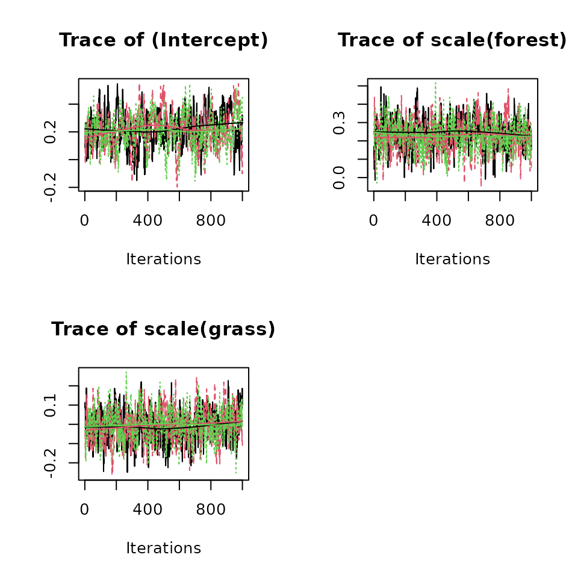
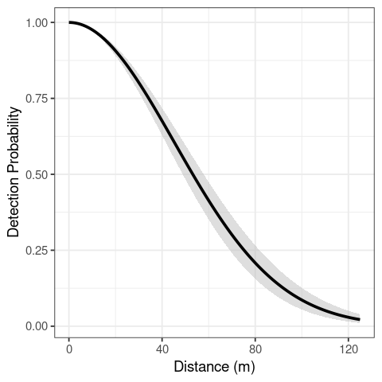
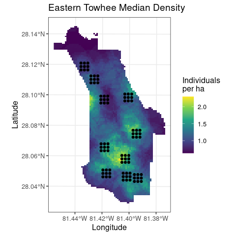
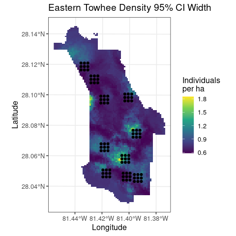
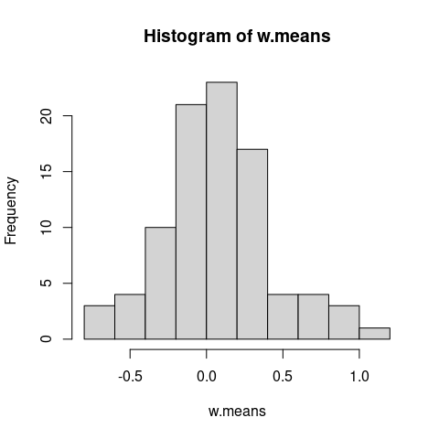
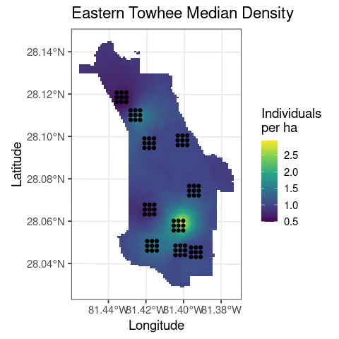
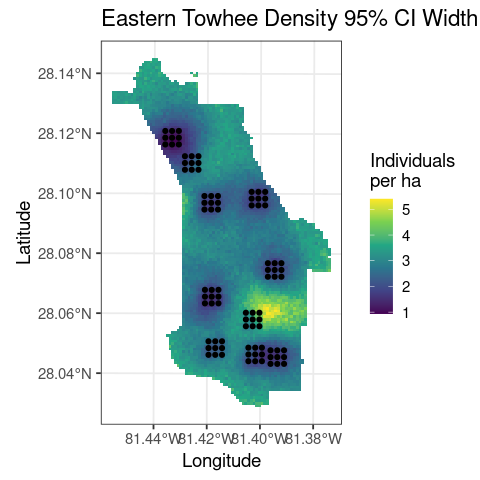
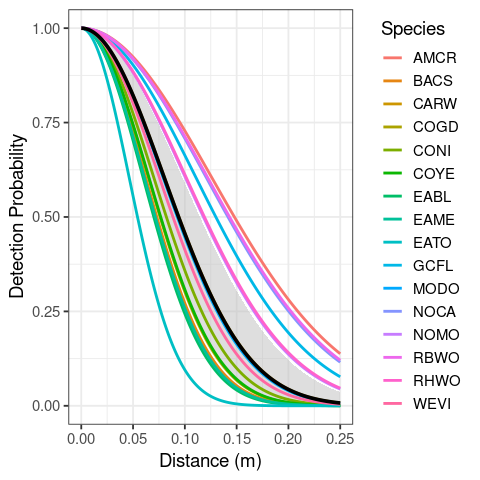

Fitting hierarchical distance sampling models in spAbundance
Jeffrey W. Doser, Marc Kéry
2023
Source:vignettes/distanceSampling.Rmd
distanceSampling.RmdIntroduction
This vignette provides worked examples and explanations for fitting single-species and multi-species hierarchical distance sampling (HDS) models in the spAbundance R package. We will provide step by step examples on how to fit the following models:
- HDS model using
DS(). - Spatial HDS model using
spDS(). - Multi-species HDS model using
msDS(). - Multi-species HDS model with species correlations using
lfMsDS(). - Spatial multi-species HDS model with species correlations using
sfMsDS().
In this vignette we are only describing spAbundance functionality to fit HDS models, with separate vignettes on fitting N-mixture models and generalized linear mixed models. We fit all models in a Bayesian framework using custom Markov chain Monte Carlo (MCMC) samplers written in C/C++ and called through R’s foreign language interface. Here we will provide a brief description of each model, with full statistical details provided in a separate vignette. As with all model types in spAbundance, we will show how to perform posterior predictive checks as a Goodness of Fit assessment, model comparison and assessment using the Widely Applicable Information Criterion (WAIC), and out-of-sample predictions using standard R helper functions (e.g., predict()). Note that syntax of distance sampling models in spAbundance closely resembles syntax for fitting occupancy models in spOccupancy (Doser et al. 2022), and that this vignette closely follows the documentation on the spOccupancy website.
To get started, we load the spAbundance package, as well as the coda package, which we will use for some MCMC summary and diagnostics. We will also use functions in the stars, ggplot2, and unmarked packages to create some basic plots of our results. We then set a seed so you can reproduce the same results as we do.
Example data set: Birds in the southeastern US
As an example data set throughout this vignette, we will use distance sampling data from the National Ecological Observatory Network (NEON). Here we use data on 16 bird species collected in 2018 in the Disney Wilderness Preserve in Florida, USA. Briefly, data were collected at 90 sites where observers recorded the number of all bird species observed during a six-minute, unlimited radius point count survey once during the breeding season. Distance of each individual bird to the observer was recorded using a laser rangefinder. For modeling, we binned the distance measurements into 4 intervals (0-25, 25-50, 50-100, 100-250), removing all observations >250m away. We removed all species with less than 10 observations, leaving us with 16 species observed across the 90 sites. More on the study location can be found on the NEON website. The data are provided as part of the spAbundance package and are loaded with data(neonDWP). See the manual page using help(neonDWP) for more information on the species included in the data.
List of 5
$ y : num [1:16, 1:90, 1:4] 0 0 0 0 0 0 1 0 0 0 ...
..- attr(*, "dimnames")=List of 3
.. ..$ : chr [1:16] "EATO" "EAME" "AMCR" "BACS" ...
.. ..$ : NULL
.. ..$ : NULL
$ covs :'data.frame': 90 obs. of 4 variables:
..$ wind : int [1:90] 0 1 1 0 0 0 0 0 0 1 ...
..$ day : num [1:90] 132 132 132 132 132 132 132 132 132 129 ...
..$ forest: num [1:90] 0.18 0.0962 0.0577 0.1569 0.08 ...
..$ grass : num [1:90] 0.2 0.192 0.192 0.216 0.22 ...
$ dist.breaks: num [1:5] 0 0.025 0.05 0.1 0.25
$ offset : num 19.6
$ coords : num [1:90, 1:2] 458629 458879 459129 458629 458879 ...
..- attr(*, "dimnames")=List of 2
.. ..$ : NULL
.. ..$ : chr [1:2] "easting" "northing"The object neonDWP is a list that is structured in the format needed for multi-species distance sampling in spAbundance. Specifically, neonDWP is a list comprised of the distance sampling data for the 16 species (y), covariates to include on either abundance and/or detection (covs), the break points of the distance bands (dist.breaks), an offset (offset), and the spatial coordinates for each site (coords). Note the coordinates are only required for spatially-explicit HDS models. The three-dimensional array y consists of the distance sampling data for all 16 species in the data set, where the dimensions of y correspond to species (16), sites (90), and distance band (4). For single-species distance sampling models in Section 2 and 3, we will only use data for the Eastern Towhee (EATO), so we next subset the neonDWP list to only include data from EATO in a new object dat.EATO.
sp.names <- dimnames(neonDWP$y)[[1]]
dat.EATO <- neonDWP
dat.EATO$y <- dat.EATO$y[sp.names == "EATO", , ]
# Number of EATO individuals observed at each site
apply(dat.EATO$y, 1, sum) [1] 2 3 0 1 1 2 2 0 3 2 2 2 1 3 2 2 2 3 2 1 0 1 2 3 1 2 1 3 1 0 3 4 0 0 0 1 2 1
[39] 1 0 0 0 0 0 0 0 1 3 2 3 4 2 2 3 1 2 1 1 0 1 3 2 2 4 4 7 3 3 5 2 3 5 1 0 2 0
[77] 3 1 2 2 1 2 0 2 1 0 0 0 0 1We see that EATO appears to be quite common across the 90 sites.
Single-species HDS models
Let \(N_j\) be the true abundance of the species of interest at site \(j = 1, \dots, J\). Following the HDS model introduced by Royle, Dawson, and Bates (2004), we model abundance following
\[\begin{equation} N_j \sim \text{Poisson}(\mu_jA_j), \end{equation}\]
where \(\mu_j\) is the expected abundance at site \(j\) and \(A_j\) is an offset. In distance sampling, the offset term will usually correspond to some measure of area sampled, hence the use of the notation \(A_j\). Note that with this definition, if an area offset is supplied when fitting the model, the estimates of \(\mu_j\) will correspond to abundance per unit area (i.e., density), while the estimates of \(N_j\) correspond to point-level abundance, regardless of whether or not an offset is supplied. Note that spAbundance also supports a negative binomial distribution for abundance, which will have an additional dispersion parameter \(\kappa\), such that low values of \(\kappa\) denote large amounts of overdispersion, and as \(\kappa \rightarrow \infty\), the NB model becomes the Poisson distribution.
We model \(\mu_j\) as a function of spatially-varying covariates with a log link function. More specifically, we have
\[\begin{equation} \text{log}(\mu_j) = \boldsymbol{x}_j^\top\boldsymbol{\beta}, \end{equation}\]
where \(\boldsymbol{\beta}\) is a vector of effects for covariates in \(\boldsymbol{x}_j\) (including an intercept)
We assume data come from observers that count the number of individuals of the species at any given location (i.e., a line transect or point count survey) and record the distance to the line/center of the point count survey of each bird within a set of \(k = 1, \dots, K\) distance bands. Note that if continuous distances are reported, they can be post-hoc binned into a set of \(K\) distance bands and fit with the package. Define \(\boldsymbol{y}_j\) as a vector of \(K\) values indicating the number of individuals observed within each distance band \(k\) at site \(j\). Similarly, let \(\boldsymbol{y}^\ast_j\) be a vector of \(K + 1\) values, where the first \(K\) values correspond to \(\boldsymbol{y}_j\), and the last value is the number of unobserved individuals at that location (i.e., \(N_j - \sum_{k = 1}^Ky_{k, j}\).) Note that the last value in \(\boldsymbol{y}^\ast_j\) is not observed (i.e., since \(N_j\) is not known). We model \(\boldsymbol{y}^\ast_j\) according to
\[\begin{equation} \boldsymbol{y}^\ast_j \sim \text{Multinomial}(N_j, \boldsymbol{\pi}_j^\ast), \end{equation}\]
where \(\boldsymbol{\pi}_j^\ast\) is a vector of \(K + 1\) cell-specific detection probabilities with the first \(K\) values denoted as \(\boldsymbol{\pi}_j\) and the last value \(\pi^\ast_{j, K + 1} = 1 - \sum_{k = 1}^K\pi_{j, k}\). More specifically, the \(k\)th value in \(\boldsymbol{\pi}_j\), \(\pi_{j, k}\), is the probability of detecting an individual in the \(k\)th distance band at site \(j\). We define \(\pi_{j, k}\) as
\[\begin{equation} \pi_{j, k} = \bar{p}_{j, k}\psi_{k}, \end{equation}\]
where \(\bar{p}_{j, k}\) is the probability of detecting an individual in distance band \(k\) at site \(j\), given the individual occurs in distance band \(k\), and \(\psi_{k}\) is the probability an individual occurs in distance band \(k\). Following the standard distance sampling assumption that animals are uniformly distributed in space, for line transects, we have
\[\begin{equation} \psi_{k} = \frac{b_{k + 1} - b_k}{B}, \end{equation}\]
where \(b_{k + 1}\) and \(b_k\) are the upper and lower distance limits for band \(k\), and \(B\) is the line transect half-width. Additionally for line transects, we have
\[\begin{equation} \bar{p}_{j, k} = \frac{1}{B}\int_{b_k}^{b_{k+1}}g(\text{x})d\text{x}. \end{equation}\]
For circular point count transects, we have
\[\begin{equation} \psi_k = \frac{b^2_{k + 1} - b^2_k}{B^2}, \end{equation}\]
where \(b_{k + 1}\) and \(b_k\) are similarly the upper and lower distance limits for band \(k\), and \(B\) is the radius of the full point count circle. We then define \(\bar{p}_{j, k}\) as
\[\begin{equation} \bar{p}_{j, k} = \frac{1}{B^2}\int_{b_k}^{b_{k+1}}g(\text{x})2\text{x}d\text{x}. \end{equation}\]
For both line transects and point count surveys, \(g(\text{x})\) is some function of distance \(\text{x}\) from the transect line/center of point count survey. spAbundance currently supports two detection functions: half-normal and negative exponential. Both of these functions are governed by a scale parameter \(\sigma_j\), which can vary across sites to allow detection probability to vary across spatial locations. We can then model \(\sigma_j\) as
\[\begin{equation} \text{log}(\sigma_j) = \boldsymbol{v}_j^\top\boldsymbol{\alpha}, \end{equation}\]
where \(\boldsymbol{\alpha}\) is a vector of regression coefficients for covariates \(\boldsymbol{v_j}\) (including an intercept).
To complete the Bayesian specification of the model, we assign normal priors to the abundance (\(\boldsymbol{\beta}\)) and detection (\(\boldsymbol{\alpha}\)) regression coefficients, and a uniform prior for the negative binomial overdispersion parameters (if applicable).
Fitting single-species HDS models with DS()
The DS() function fits single-species distance sampling models. DS() has the following arguments:
DS(abund.formula, det.formula, data, inits, priors, tuning,
n.batch, batch.length, accept.rate = 0.43, family = 'Poisson',
transect = 'line', det.func = 'halfnormal',
n.omp.threads = 1, verbose = TRUE,
n.report = 100, n.burn = round(.10 * n.batch * batch.length), n.thin = 1,
n.chains = 1, ...)The first two arguments, abund.formula and det.formula, use standard R model syntax to denote the covariates to be included in the abundance and detection portions of the model, respectively. Only the right hand side of the formulas are included. Random intercepts and slopes can be included in both the abundance and detection portions of the HDS model using lme4 syntax (Bates et al. 2015). For example, to include a random intercept for different observers in the detection portion of the model, we would include (1 | observer) in the det.formula, where observer indicates the specific observer for each data point. See the N-mixture modeling vignette for an example of fitting models in spAbundance with random effects. The names of variables given in the formulas should correspond to those found in data, which is a list consisting of the following tags: y (distance sampling data), covs (covariates), dist.breaks (breakpoints for distance bands), offset (an optional offset), and coords. y should be stored as a sites x distance bin matrix, covs is a matrix or data frame with site-specific covariate values, dist.breaks is a vector of length equal to the number of columns in y plus one comprised of distances that denote the breakpoints of the distance bands, and offset is an offset that can be used to scale estimates from abundance per survey to density per some desired unit of measure. The dat.EATO list is already in the required format. Note that we have four covariates in covs, which includes an ordinal measure of the amount of wind during the survey (0 is low, 3 is high), the day the survey took place, and the amount of forest cover and grassland cover within a 1km radius circle around the point count location. Here we will model abundance as a function of forest and grassland cover, and model detection probability as a linear function of wind (and of course by distance, since that is what distance sampling does). Note that although wind is measured as an ordinal variable, here we make the simplifying assumption that the effect of wind on detection probability takes a linear relationship as the ordinal variable increases, which reduces the number of parameters we need to estimate. Notice that we use the scale() function to standardize all the coefficients in the model such that their mean is 0 and standard deviation is 1. This is often useful for obtaining convergence of our MCMC models.
Notice the dist.breaks element in dat.EATO consists of five values:
dat.EATO$dist.breaks[1] 0.000 0.025 0.050 0.100 0.250These values correspond to the distance cut off values (in km) for the 4 distance bins in our distance sampling data. An important point to mention is that when fitting distance sampling models in spAbundance, the models can be somewhat sensitive to initial values of the detection parameters, which is a result of the initial values resulting in an invalid likelihood. This is particularly true when the distance breaks take large values (e.g., 100). Thus, we recommend converting the units of distance breaks to a value that is as small as possible, but still makes sense. For example, we originally calculated the distance breaks values for this data set in meters, but we then divided them by 1000 to give the distance break values in km instead. Note that if bad initial values are supplied to a distance sampling model, the underlying functions will select new initial values that do not result in an invalid likelihood, and so this will generally not be a problem that you encounter when fitting a model, but there could be situations when the functions do not successfully catch bad initial values.
The offset in this case takes value 19.63, which will put the estimated regression coefficients on the scale of individuals per ha rather than individuals per point count. To see where the value comes from, recall we are using 250m (.25km) radius point count surveys and that the area of a circle is \(\pi r^2\), with \(r\) being the circle’s radius. To get our estimates on a per hectare scale, we set our offset to the area in km\(^2\) then multiply it by 100.
# Offset to switch from km2 to ha
radius.km <- .25
pi * radius.km^2 * 100[1] 19.63495Next, we specify the initial values for the MCMC sampler in inits. DS() (and all other spAbundance model fitting functions) will set initial values by default, but here we will do this explicitly, since in more complicated cases setting initial values close to the presumed solutions can be vital for success of an MCMC-based analysis. The default initial values for abundance regression coefficients (including the intercepts) are random values from a standard normal distribution. The initial values for the detection regression coefficients are random values from a Uniform(-10, 10) distribution. If an invalid starting value for the detection regression coefficients is drawn (or specified by the user), spAbundance will report a message saying it is trying a different starting value (also drawn randomly from a Uniform(-10, 10)), and will continue to do so until it finds values that do not result in an invalid likelihood. The default initial values for the latent abundance effects are set to the total number of individuals observed at that site. When fitting a HDS model with a negative binomial distribution, the initial value for the overdispersion parameter is drawn from the prior distribution. Initial values are specified in a list with the following tags: N (latent abundance values), alpha (detection intercept and regression coefficients), beta (abundance intercept and regression coefficients), and kappa (negative binomial overdispersion parameter). Below we set all initial values of the regression coefficients to 0, initial values for the overdispersion parameter to 1, and set initial values for N to the total number of observed individuals at each site. For the abundance (beta) and detection (alpha) regression coefficients, the initial values are passed either as a vector of length equal to the number of estimated parameters (including an intercept, and in the order specified in the model formula), or as a single value if setting the same initial value for all parameters (including the intercept). Below we take the latter approach. For the negative binomial overdispersion parameter, the initial value is simply a single numeric value. To specify the initial values for the latent abundance at each site (N), we must ensure we set the value to at least the total number of individuals observed at a site, because we know the true abundance must be greater than or equal to the number of individuals observed (i.e., assuming no false positives). If the initial values for N do not meet this criterion, DS() will fail. spAbundance will provide a clear error message if the supplied initial values for N are invalid. Below we use the raw count data and the apply() function to set the initial values.
We next specify the priors for the abundance and detection regression coefficients, as well as the negative binomial overdispersion parameter. We assume normal priors for both the detection and abundance regression coefficients. These priors are specified in a list with tags beta.normal for abundance and alpha.normal for detection parameters (including intercepts). Each list element is then itself a list, with the first element of the list consisting of the hypermeans for each coefficient and the second element of the list consisting of the hypervariances for each coefficient. Alternatively, the hypermean and hypervariances can be specified as a single value if the same prior is used for all regression coefficients. By default, spAbundance will set the hypermeans to 0 and the hypervariances to 100. For the negative binomial overdispersion parameter, we will use a uniform prior. This prior is specified as a tag in the prior list called kappa.unif, which should be a vector with two values indicating the lower and upper bound of the uniform distribution. The default prior is to set the lower bound to 0 and the upper bound to 100. Recall that lower values of kappa indicate substantial overdispersion and high values of kappa indicate minimal overdispersion. If there is little support for overdispersion when fitting a negative binomial model, we will likely see the estimates of kappa be close to the upper bound of the uniform prior distribution. For the default prior distribution, if the estimates of kappa are very close to 100, this indicates little support for overdispersion in the model, and we can likely switch to using a Poisson distribution (which would also likely be favored by model comparison approaches). Below we use default priors for all parameters, but specify them explicitly for clarity.
prior.list <- list(beta.normal = list(mean = 0, var = 100),
alpha.normal = list(mean = 0, var = 100),
kappa.unif = c(0, 100))The next four arguments (tuning, n.batch, batch.length, and accept.rate) are all related to the specific type of MCMC sampler we use when we fit HDS models in spAbundance. The parameters in HDS models are all estimated using whats called a Metropolis-Hastings step, which can often be slow and inefficient, leading to slow mixing and convergence of the MCMC chains. To try and mitigate the slow mixing and convergence issues, we update all parameters using an algorithm called an adaptive Metropolis-Hastings algorithm (see Roberts and Rosenthal (2009) for more details on this algorithm). In this approach, we break up the total number of MCMC samples into a set of “batches”, where each batch has a specific number of MCMC samples. Thus, we must specify the total number of batches (n.batch) as well as the number of MCMC samples each batch contains (batch.length) when specifying the function arguments. The total number of MCMC samples is n.batch * batch.length. Typically, we set batch.length = 25 and then play around with n.batch until convergence of all model parameters is reached. We generally recommend setting batch.length = 25, but in certain situations this can be increased to a larger number of samples (e.g., 100), which can result in moderate decreases in run time. Here we set n.batch = 2000 for a total of 50,000 MCMC samples for each MCMC chain we run.
n.batch <- 2000
batch.length <- 25
# Total number of MCMC samples per chain
batch.length * n.batch[1] 50000Importantly, we also need to specify a target acceptance rate and initial tuning parameters for the abundance and detection regression coefficients (and the negative binomial overdispersion parameter and any latent random effects if applicable). These are both features of the adaptive algorithm we use to sample these parameters. In this adaptive Metropolis-Hastings algorithm, we propose new values for the parameters from some proposal distribution, compare them to our previous values, and use a statistical algorithm to determine if we should accept the new proposed value or keep the old one. The accept.rate argument specifies the ideal proportion of times we will accept the newly proposed values for these parameters. Roberts and Rosenthal (2009) show that if we accept new values around 43% of the time, this will lead to optimal mixing and convergence of the MCMC chains. Following these recommendations, we should strive for an algorithm that accepts new values about 43% of the time. Thus, we recommend setting accept.rate = 0.43 unless you have a specific reason not to (this is the default value). The values specified in the tuning argument help control the initial values we will propose for the abundance/detection coefficients and the negative binomial overdispersion parameter. These values are supplied as input in the form of a list with tags beta, alpha, and kappa. The initial tuning value can be any value greater than 0, but we generally recommend starting the value out around 0.5. These tuning values can also be thought of as tuning “variances”, as it is these values that controls the variance of the distribution we use to generate newly proposed values for the parameters we are trying to estimate. In short, the new values that we propose for the parameters beta, alpha, and kappa come from a normal distribution with mean equal to the current value for the given parameter and the variance equal to the tuning parameter. Thus, the smaller this tuning parameter/variance is, the closer our proposed values will be to the current value, and vise versa for large values of the tuning parameter. The “ideal” value of the tuning variance will depend on the data set, the parameter, and how much uncertainty there is in the estimate of the parameter. This initial tuning value that we supply is the first tuning variance that will be used for the given parameter, and our adaptive algorithm will adjust this tuning parameter after each batch to yield acceptance rates of newly proposed values that are close to our target acceptance rate that we specified in the accept.rate argument. Information on the acceptance rates for a few of the parameters in our model will be displayed when setting verbose = TRUE. After some initial runs of the model, if you notice the final acceptance rate is much larger or smaller than the target acceptance rate (accept.rate), you can then change the initial tuning value to get closer to the target rate. While use of this algorithm requires us to specify more arguments than if we didn’t “adaptively tune” our proposal variances, this leads to much shorter run times compared to a more simple approach where we do not have an “adaptive” sampling approach, and it should thus save us time in the long haul when waiting for these models to run. For our example here, we set the initial tuning values to 0.5 for beta, alpha, and kappa.
tuning <- list(beta = 0.5, alpha = 0.5, kappa = 0.5)
# accept.rate = 0.43 by default, so we do not specify it.We also need to specify the length of burn-in (n.burn), the rate at which we want to thin the posterior samples (n.thin), and the number of MCMC chains to run (n.chains). Note that currently spAbundance runs multiple chains sequentially and does not allow chains to be run simultaneously in parallel across multiple threads. Instead, we allow for within-chain parallelization using the n.omp.threads argument. We can set n.omp.threads to a number greater than 1 and smaller than the number of threads on the computer you are using. Generally, setting n.omp.threads > 1 will not result in decreased run times for non-spatial models in spAbundance, but can substantially decrease run time when fitting spatial models (Finley, Datta, and Banerjee 2020). Here we set n.omp.threads = 1, and run the model for three chains to assess convergence using the Gelman-Rubin diagnostic (Rhat; Brooks and Gelman (1998)).
n.burn <- 20000
n.thin <- 30
n.chains <- 3The family argument is used to indicate whether we want to model abundance with a Poisson distribution (Poisson) or a negative binomial distribution (NB). Here we will start with a Poisson distribution (the default), which we will compare to a model with a negative binomial distribution later. The det.func argument is used to specify the specific detection function to use for allowing detection probability to vary by distance. spAbundance currently supports two functions: half-normal (halfnormal) and negative exponential (negexp). Here we will use a half-normal detection function, but we could of course compare this function to a negative exponential using model selection criteria. The transect argument is used to specify whether the distance sampling data come from linear transects (line) or circular transects (point). Finally, the verbose argument is a logical value indicating whether or not MCMC sampler progress is reported to the screen. If verbose = TRUE, sampler progress is reported to the screen. The argument n.report specifies the interval to report the Metropolis-Hastings sampler acceptance rate. Note that n.report is specified in terms of batches, not the overall number of samples. Below we set n.report = 500, which will result in information on the acceptance rate and tuning parameters every 500th batch (not sample).
We now are set to fit the model.
out <- DS(abund.formula = abund.formula,
det.formula = det.formula,
data = dat.EATO,
n.batch = n.batch,
batch.length = batch.length,
inits = inits.list,
family = 'Poisson',
det.func = 'halfnormal',
transect = 'point',
tuning = tuning,
priors = prior.list,
accept.rate = 0.43,
n.omp.threads = 1,
verbose = TRUE,
n.report = 500,
n.burn = n.burn,
n.thin = n.thin,
n.chains = n.chains)----------------------------------------
Preparing to run the model
----------------------------------------
----------------------------------------
Model description
----------------------------------------
Poisson HDS model with 90 sites.
Samples per Chain: 50000 (2000 batches of length 25)
Burn-in: 20000
Thinning Rate: 30
Number of Chains: 3
Total Posterior Samples: 3000
Source compiled with OpenMP support and model fit using 1 thread(s).
Adaptive Metropolis with target acceptance rate: 43.0
----------------------------------------
Chain 1
----------------------------------------
Sampling ...
Batch: 500 of 2000, 25.00%
Parameter Acceptance Tuning
beta[1] 56.0 0.05166
beta[2] 44.0 0.05709
beta[3] 44.0 0.05485
alpha[1] 40.0 0.07257
alpha[2] 32.0 0.08348
-------------------------------------------------
Batch: 1000 of 2000, 50.00%
Parameter Acceptance Tuning
beta[1] 28.0 0.05596
beta[2] 52.0 0.05166
beta[3] 36.0 0.05376
alpha[1] 40.0 0.07114
alpha[2] 52.0 0.08348
-------------------------------------------------
Batch: 1500 of 2000, 75.00%
Parameter Acceptance Tuning
beta[1] 60.0 0.05596
beta[2] 32.0 0.05166
beta[3] 40.0 0.05376
alpha[1] 44.0 0.07862
alpha[2] 32.0 0.08864
-------------------------------------------------
Batch: 2000 of 2000, 100.00%
----------------------------------------
Chain 2
----------------------------------------
Sampling ...
Batch: 500 of 2000, 25.00%
Parameter Acceptance Tuning
beta[1] 56.0 0.05596
beta[2] 32.0 0.05709
beta[3] 52.0 0.05166
alpha[1] 32.0 0.08348
alpha[2] 52.0 0.08689
-------------------------------------------------
Batch: 1000 of 2000, 50.00%
Parameter Acceptance Tuning
beta[1] 44.0 0.05485
beta[2] 48.0 0.05824
beta[3] 36.0 0.05270
alpha[1] 24.0 0.07257
alpha[2] 44.0 0.08517
-------------------------------------------------
Batch: 1500 of 2000, 75.00%
Parameter Acceptance Tuning
beta[1] 32.0 0.05376
beta[2] 48.0 0.05709
beta[3] 40.0 0.05376
alpha[1] 20.0 0.07257
alpha[2] 28.0 0.08021
-------------------------------------------------
Batch: 2000 of 2000, 100.00%
----------------------------------------
Chain 3
----------------------------------------
Sampling ...
Batch: 500 of 2000, 25.00%
Parameter Acceptance Tuning
beta[1] 48.0 0.05270
beta[2] 60.0 0.05596
beta[3] 36.0 0.05376
alpha[1] 32.0 0.07114
alpha[2] 32.0 0.08517
-------------------------------------------------
Batch: 1000 of 2000, 50.00%
Parameter Acceptance Tuning
beta[1] 52.0 0.05376
beta[2] 48.0 0.05270
beta[3] 40.0 0.05596
alpha[1] 44.0 0.07404
alpha[2] 52.0 0.07862
-------------------------------------------------
Batch: 1500 of 2000, 75.00%
Parameter Acceptance Tuning
beta[1] 48.0 0.04865
beta[2] 32.0 0.05063
beta[3] 24.0 0.05376
alpha[1] 40.0 0.06699
alpha[2] 56.0 0.07706
-------------------------------------------------
Batch: 2000 of 2000, 100.00%DS() returns a list of class DS with a suite of different objects, many of them being coda::mcmc objects of posterior samples. The “Preparing to run the model” section will print information on default priors or initial values that are used when they are not specified in the function call. Here we specified everything explicitly so no information was reported.
We next use the summary() function on the resulting DS() object for a concise, informative summary of the regression parameters and convergence of the MCMC chains.
summary(out)
Call:
DS(abund.formula = abund.formula, det.formula = det.formula,
data = dat.EATO, inits = inits.list, priors = prior.list,
tuning = tuning, n.batch = n.batch, batch.length = batch.length,
accept.rate = 0.43, family = "Poisson", transect = "point",
det.func = "halfnormal", n.omp.threads = 1, verbose = TRUE,
n.report = 500, n.burn = n.burn, n.thin = n.thin, n.chains = n.chains)
Samples per Chain: 50000
Burn-in: 20000
Thinning Rate: 30
Number of Chains: 3
Total Posterior Samples: 3000
Run Time (min): 0.6705
Abundance (log scale):
Mean SD 2.5% 50% 97.5% Rhat ESS
(Intercept) 0.2106 0.1215 -0.0296 0.2092 0.4533 1.0553 217
scale(forest) 0.1897 0.0809 0.0385 0.1882 0.3535 1.0057 528
scale(grass) 0.0017 0.0857 -0.1653 0.0013 0.1697 1.0193 498
Detection (log scale):
Mean SD 2.5% 50% 97.5% Rhat ESS
(Intercept) -3.0940 0.044 -3.1775 -3.0942 -3.0065 1.0321 409
scale(wind) -0.0893 0.033 -0.1529 -0.0892 -0.0243 1.0039 2652Notice both the abundance and detection coefficients are printed on the log scale. Recall that since we included an offset in the data list, the abundance values are on the scale of individuals per ha. Thus, at average values of forest cover and grassland, our model estimates there are exp(0.21) individuals per ha, which is 1.23. We also see a positive effect of forest cover on EATO density, and essentially no effect of grassland.
The model summary also provides information on convergence of the MCMC chains in the form of the Gelman-Rubin diagnostic (Brooks and Gelman 1998) and the effective sample size (ESS) of the posterior samples. Here we find all Rhat values are less than 1.1 and the ESS values are substantially large for all parameters. The ESS values are also adequately high for all model parameters, indicating adequate mixing of the MCMC chains. We can further look at traceplots of different parameters to get a better sense of convergence. This can be done using the plot() function, which has three arguments for all spAbundance models: x (the resulting object from fitting the model), param (the parameter name that you want to display), and density (a logical value indicating whether to also generate a density plot in addition to the traceplot). To see the parameter names available to use with plot() for a given model type, you can look at the manual page for the function, which for models generated from DS() can be accessed with ?plot.DS.
Below we generate a traceplot for the three abundance coefficients.
plot(out, param = 'beta', density = FALSE)
Looking at the detection portion of the model summary, we see there is a negative effect of wind on detection probability, indicating that as wind increases, detection probability decreases, which is what we would expect. Interpreting the intercept detection parameter is a bit difficult and doesn’t itself provide us with a great understanding of how detection varies with distance. Instead, we can plot the relationship between distance and detection using our estimated parameter value. The below code generates a plot of detection probability versus distance (at the average value of wind). Notice we use the nifty gxhn() function from unmarked to get the estimated detection probability value for a given distance and scale parameter value when using the half normal function (see ?gxhn for more details).
det.int.samples <- out$alpha.samples[, 1]
det.quants <- quantile(exp(out$alpha.samples[, 1]), c(0.025, 0.5, 0.975))
x.vals <- seq(0, .125, length.out = 200)
n.vals <- length(x.vals)
p.plot.df <- data.frame(med = gxhn(x.vals, det.quants[2]),
low = gxhn(x.vals, det.quants[1]),
high = gxhn(x.vals, det.quants[3]),
x.val = x.vals * 1000)
ggplot(data = p.plot.df) +
geom_ribbon(aes(x = x.val, ymin = low, ymax = high), fill = 'grey',
alpha = 0.5) +
theme_bw(base_size = 14) +
geom_line(aes(x = x.val, y = med), col = 'black', linewidth = 1.3) +
labs(x = 'Distance (m)', y = 'Detection Probability')
We see detection probability of EATO is quite high up to fairly moderate distances away from the observer (detection probability is 0.5 at about 55m away). This is perhaps not too surprising given the very distinctive “drink-your-tea” song of EATO.
Posterior predictive checks
The function ppcAbund() performs a posterior predictive check on all spAbundance model objects as a Goodness of Fit (GoF) assessment. The fundamental idea of GoF testing is that a good model should generate data that closely align with the observed data. If there are drastic differences in the true data from the model generated data, our model is likely not very useful (Hobbs and Hooten 2015). In spAbundance, we perform posterior predictive checks using the following approach:
- Fit the model using any of the model-fitting functions (here
DS()), which generates replicated values for all observed data points. - Optionally bin both the actual and the replicated count data in some manner, such as by site.
- Compute a fit statistic on both the actual data and also on the model-generated ‘replicate data’.
- Compare the fit statistics for the true data and replicate data. If they are widely different, this suggests a lack of fit of the model to the actual data set at hand.
We calculate the replicate values in two steps. We first predict a value of latent abudance at each site using the expected abundance at site \(j\) (i.e., \(\mu_j\)), and then subsequently generate the estimated counts in each distance bin \(k\) at that site \(j\). More specifically, the replicate values are calculated as
\[\begin{equation} \begin{split} \hat{N}_j &\sim \text{Poisson}(\mu_j), \\ \hat{\boldsymbol{y}}_j &\sim \text{Multinomial}(\hat{N}_j, \boldsymbol{\pi}_j). \end{split} \end{equation}\]
Note the Poisson distribution is replaced with a negative binomial distribution if that is used to fit the model. This is what we call a “marginal” approach to calculating fitted values. See our discussion in the N-mixture modeling vignette for further details on different approaches to calculating replicate values in hierarchical models.
To perform a posterior predictive check, we send the resulting DS model object as input to the ppcAbund() function, along with a fit statistic (fit.stat) and a numeric value indicating how to group, or bin, the data (group). Currently supported fit statistics include the Freeman-Tukey statistic and the Chi-Squared statistic (freeman-tukey or chi-squared, respectively, Kéry and Royle (2016)). For HDS models, ppcAbund() allows the user to group the data by row (site; group = 1) or not at all (group = 0). ppcAbund() will then return a set of posterior samples for the fit statistic (or discrepancy measure) using the actual data (fit.y) and model generated replicate data set (fit.y.rep), summed across all data points in the chosen manner. For example, when setting group = 1, spAbundance will first sum all of the count values at a given site across all distance bands at that site, then calculate the fit statistic using the site-level sums. When setting group = 0, spAbundance calculates the fit statistic directly on the count value in each site and distance bin.
The resulting values from a call to ppcAbund() can be used with the summary() function to generate a Bayesian p-value, which is the probability, under the fitted model, to obtain a value of the fit statistic that is more extreme (i.e., larger) than the one observed, i.e., for the actual data. Bayesian p-values are sensitive to individual values, so we may also want to explore the discrepancy measures for each (potentially “grouped”) data point. ppcAbund() returns a matrix of posterior quantiles for the fit statistic for both the observed (fit.y.group.quants) and model generated, replicate data (fit.y.rep.group.quants) for each “grouped” data point.
We next perform a posterior predictive check using the Freeman-Tukey statistic grouping the data by sites. We summarize the posterior predictive check with the summary() function, which reports a Bayesian p-value. A Bayesian p-value that hovers around 0.5 indicates adequate model fit, while values less than 0.1 or greater than 0.9 suggest our model does not fit the data well (Hobbs and Hooten 2015). As always with a simulation-based analysis using MCMC, you will get numerically slightly different values.
Call:
ppcAbund(object = out, fit.stat = "freeman-tukey", group = 1)
Samples per Chain: 50000
Burn-in: 20000
Thinning Rate: 30
Number of Chains: 3
Total Posterior Samples: 3000
Bayesian p-value: 0.4563
Fit statistic: freeman-tukey The Bayesian p-value is greater than 0.1 and less than 0.9, indicating an adequate fit to the data. See the introductory spOccupancy vignette for ways to further explore resulting objects from posterior predictive checks.
Model selection using WAIC
Posterior predictive checks allow us to assess how well our model fits the data, but they are not very useful if we want to compare multiple competing models and ultimately select a final model based on some criterion. Bayesian model selection is very much a constantly changing field. See Hooten and Hobbs (2015) for an accessible overview of Bayesian model selection for ecologists.
For Bayesian hierarchical models like HDS models, the most common Bayesian model selection criterion, the deviance information criterion or DIC, is not applicable (Hooten and Hobbs 2015). Instead, the Widely Applicable Information Criterion (Watanabe 2010) is recommended to compare a set of models and select the best-performing model for final analysis.
The WAIC is calculated for all spAbundance model objects using the function waicAbund(). We calculate the WAIC as
\[ \text{WAIC} = -2 \times (\text{elppd} - \text{pD}), \]
where elppd is the expected log point-wise predictive density and pD is the effective number of parameters. We calculate elpd by calculating the likelihood for each posterior sample, taking the mean of these likelihood values, taking the log of the mean of the likelihood values, and summing these values across all sites. We calculate the effective number of parameters by calculating the variance of the log likelihood for each site taken over all posterior samples, and then summing these values across all sites. See Appendix S1 from Broms, Hooten, and Fitzpatrick (2016) for more details in the context of occupancy models.
We calculate the WAIC using waicAbund() for our model below (as always, note some slight differences with your solutions due to Monte Carlo error).
waicAbund(out)N.max not specified. Setting upper index of integration of N to 10 plus
the largest estimated abundance value at each site in object$N.samples elpd pD WAIC
-257.138933 4.762548 523.802962 Note the perhaps somewhat cryptic message that is displayed to the screen when you run the previous line. When calculating WAIC for HDS models, we need to integrate out the latent abundance values, which requires setting an upper bound to the potential value of the latent abundance values \(N_j\) at each spatial location. By default, waicAbund() will set that upper bound to the largest abundance value at each site plus 10 (as indicated by the message). This upper bound can be controlled further with the N.max argument in waicAbund(). See the help page for waicAbund for details. Note that the higher the value of N.max the longer the function will take, so waicAbund() will be slower when working with data that have large counts.
Now let’s compare our Poisson HDS model to a model that uses a negative binomial distribution for abundance.
out.nb <- DS(abund.formula = ~ scale(forest) + scale(grass),
det.formula = ~ scale(wind),
data = dat.EATO,
n.batch = n.batch,
batch.length = batch.length,
inits = inits.list,
family = 'NB',
det.func = 'halfnormal',
transect = 'point',
tuning = tuning,
priors = prior.list,
accept.rate = 0.43,
n.omp.threads = 1,
verbose = FALSE,
n.report = 400,
n.burn = n.burn,
n.thin = n.thin,
n.chains = n.chains)
waicAbund(out)N.max not specified. Setting upper index of integration of N to 10 plus
the largest estimated abundance value at each site in object$N.samples elpd pD WAIC
-257.138933 4.762548 523.802962
waicAbund(out.nb)N.max not specified. Setting upper index of integration of N to 10 plus
the largest estimated abundance value at each site in object$N.samples elpd pD WAIC
-257.341560 4.977119 524.637358 We see very similar WAIC values between the Poisson and NB model. We thus conclude the additional overdispersion that the NB model allows does not improve model fit, and so we will continue using the Poisson model.
Prediction
All model objects from a call to spAbundance model-fitting functions can be used with predict() to generate a series of posterior predictive samples at new locations, given the values of all covariates used in the model fitting process. Here we will predict abundance/density across the entire Disney Wilderness Preserve at a 1ha resolution. The prediction data are stored in the neonPredData object, which is available in spAbundance.
'data.frame': 4838 obs. of 4 variables:
$ forest : num 0.0208 0.0196 0.0196 0.02 0.0192 ...
$ grass : num 0.188 0.176 0.176 0.18 0.192 ...
$ easting : num 456756 456856 456456 456556 456656 ...
$ northing: num 3113309 3113309 3113209 3113209 3113209 ...The prediction data consist of 4838 1ha cells in which we will predict EATO abundance. The data frame consists of the spatial coordinates for each cell and the two covariates we used to fit the model (the amount of forest and grassland cover within a 1km radius circle centered at the center of each cell). Given that we standardized the covariate values when we fit the model, we need to standardize the covariate values for prediction using the exact same values of the mean and standard deviation of the covariate values used to fit the data.
# Center and scale covariates by values used to fit model
forest.pred <- (neonPredData$forest - mean(dat.EATO$covs$forest)) /
sd(dat.EATO$covs$forest)
grass.pred <- (neonPredData$grass - mean(dat.EATO$covs$grass)) /
sd(dat.EATO$covs$grass)For DS(), the predict() function takes four arguments:
-
object: theDSfitted model object. -
X.0: a matrix or data frame consisting of the design matrix for the prediction locations (which must include an intercept if our model contained one). -
ignore.RE: a logical value indicating whether or not to remove random effects from the predicted values. By default, this is set toFALSE, and so prediction will include the random effects (if any are specified). -
type: a quoted keyword indicating whether we want to predictabundanceordetection. This is by default set toabundance.
Below we form the design matrix and predict abundance/density within each 1ha grid cell.
X.0 <- cbind(1, forest.pred, grass.pred)
colnames(X.0) <- c('(Intercept)', 'forest', 'grass')
out.pred <- predict(out, X.0)
str(out.pred)List of 3
$ mu.0.samples: 'mcmc' num [1:3000, 1:4838] 0.891 0.768 0.916 0.864 0.867 ...
..- attr(*, "mcpar")= num [1:3] 1 3000 1
$ N.0.samples : 'mcmc' int [1:3000, 1:4838] 0 1 1 0 0 1 3 1 1 2 ...
..- attr(*, "mcpar")= num [1:3] 1 3000 1
$ call : language predict.DS(object = out, X.0 = X.0)
- attr(*, "class")= chr "predict.DS"The resulting object consists of posterior predictive samples for the expected abundances (mu.0.samples) and latent abundance values (N.0.samples). The beauty of the Bayesian paradigm, and the MCMC computing machinery, is that these predictions all have fully propagated uncertainty. Below, we produce a map of EATO density across the preserve, as well as a map of the uncertainty, where here we represent uncertainty with the width of the 95% credible interval. We will also plot the coordinates of the actual data locations to show where the data we used to fit the model relate to the overall predictions across the park.
mu.0.quants <- apply(out.pred$mu.0.samples, 2, quantile, c(0.025, 0.5, 0.975))
plot.df <- data.frame(Easting = neonPredData$easting,
Northing = neonPredData$northing,
mu.0.med = mu.0.quants[2, ],
mu.0.ci.width = mu.0.quants[3, ] - mu.0.quants[1, ])
coords.stars <- st_as_stars(plot.df, crs = st_crs(32617))
coords.sf <- st_as_sf(as.data.frame(dat.EATO$coords), coords = c('easting', 'northing'),
crs = st_crs(32617))
# Plot of median estimate
ggplot() +
geom_stars(data = coords.stars, aes(x = Easting, y = Northing, fill = mu.0.med)) +
geom_sf(data = coords.sf) +
scale_fill_viridis_c(na.value = NA) +
theme_bw(base_size = 12) +
labs(fill = 'Individuals\nper ha', x = 'Longitude', y = 'Latitude',
title = 'Eastern Towhee Median Density')
# Plot of 95% CI width
ggplot() +
geom_stars(data = coords.stars, aes(x = Easting, y = Northing, fill = mu.0.ci.width)) +
geom_sf(data = coords.sf) +
scale_fill_viridis_c(na.value = NA) +
theme_bw(base_size = 12) +
labs(fill = 'Individuals\nper ha', x = 'Longitude', y = 'Latitude',
title = 'Eastern Towhee Density 95% CI Width')
Single-species spatial HDS models
Basic model description
When working across large spatial domains, accounting for residual spatial autocorrelation in species distributions can often improve predictive performance of a model, leading to more accurate predictions of species abundance patterns (Guélat and Kéry 2018). We here extend the basic single-species HDS model to incorporate a spatial random effect that accounts for unexplained spatial variation in species abundance across a region of interest. Let \(\boldsymbol{s}_j\) denote the geographical coordinates of site \(j\) for \(j = 1, \dots, J\). In all spatially-explicit models, we include \(\boldsymbol{s}_j\) directly in the notation of spatially-indexed variables to indicate the model is spatially-explicit. More specifically, the expected abundance at site \(j\) with coordinates \(\boldsymbol{s}_j\), \(\mu(\boldsymbol{s}_j)\), now takes the form
\[\begin{equation} \text{log}(\mu(\boldsymbol{s}_j) = \boldsymbol{x}(\boldsymbol{s}_j)^{\top}\boldsymbol{\beta} + \text{w}(\boldsymbol{s}_j), \end{equation}\]
where \(\text{w}(\boldsymbol{s}_j)\) is a spatial random effect modeled with a Nearest Neighbor Gaussian Process (NNGP; Datta et al. (2016)). More specifically, we have
\[\begin{equation} \textbf{w}(\boldsymbol{s}) \sim N(\boldsymbol{0}, \boldsymbol{\tilde{\Sigma}}(\boldsymbol{s}, \boldsymbol{s}', \boldsymbol{\theta})), \end{equation}\]
where \(\boldsymbol{\tilde{\Sigma}}(\boldsymbol{s}, \boldsymbol{s}', \boldsymbol{\theta})\) is the NNGP-derived spatial covariance matrix that originates from the full \(J \times J\) covariance matrix \(\boldsymbol{\Sigma}(\boldsymbol{s}, \boldsymbol{s}', \boldsymbol{\theta})\) that is a function of the distances between any pair of site coordinates \(\boldsymbol{s}\) and \(\boldsymbol{s}'\) and a set of parameters \((\boldsymbol{\theta})\) that govern the spatial process. The vector \(\boldsymbol{\theta}\) is equal to \(\boldsymbol{\theta} = \{\sigma^2, \phi, \nu\}\), where \(\sigma^2\) is a spatial variance parameter, \(\phi\) is a spatial decay parameter, and \(\nu\) is a spatial smoothness parameter. \(\nu\) is only specified when using a Matern correlation function. The detection portion of the HDS model remains unchanged from the non-spatial model. The NNGP is a computationally efficient alternative to working with a full Gaussian process model, which is notoriously slow for even moderately large data sets. See Datta et al. (2016) and Finley et al. (2019) for complete statistical details on the NNGP.
Fitting single-species spatial HDS models with spDS()
The function spDS() fits single-species spatial HDS models.
spDS(abund.formula, det.formula, data, inits, priors, tuning,
cov.model = 'exponential', NNGP = TRUE,
n.neighbors = 15, search.type = 'cb',
n.batch, batch.length, accept.rate = 0.43, family = 'Poisson',
transect = 'line', det.func = 'halfnormal',
n.omp.threads = 1, verbose = TRUE,
n.report = 100, n.burn = round(.10 * n.batch * batch.length), n.thin = 1,
n.chains = 1, ...)The arguments to spDS() are very similar to those we saw with DS(), with a few additional components. The abundance (abund.formula) and detection (det.formula) formulas, as well as the list of data (data), take the same form as we saw in DS(), with random slopes and intercepts allowed in both the abundance and detection models. Notice the coords matrix in the data.EATO list of data. We did not use this for DS() (except when making the map of the predicted values), but specifying the spatial coordinates in data is necessary for all spatially explicit models in spAbundance.
abund.formula <- ~ scale(forest) + scale(grass)
det.formula <- ~ scale(wind)
str(dat.EATO) # coords is required for spDS()List of 5
$ y : num [1:90, 1:4] 0 0 0 0 0 0 0 0 0 0 ...
$ covs :'data.frame': 90 obs. of 4 variables:
..$ wind : int [1:90] 0 1 1 0 0 0 0 0 0 1 ...
..$ day : num [1:90] 132 132 132 132 132 132 132 132 132 129 ...
..$ forest: num [1:90] 0.18 0.0962 0.0577 0.1569 0.08 ...
..$ grass : num [1:90] 0.2 0.192 0.192 0.216 0.22 ...
$ dist.breaks: num [1:5] 0 0.025 0.05 0.1 0.25
$ offset : num 19.6
$ coords : num [1:90, 1:2] 458629 458879 459129 458629 458879 ...
..- attr(*, "dimnames")=List of 2
.. ..$ : NULL
.. ..$ : chr [1:2] "easting" "northing"The initial values (inits) are again specified in a list. Valid tags for initial values now additionally include the parameters associated with the spatial random effects. These include: sigma.sq (spatial variance parameter), phi (spatial decay parameter), w (the latent spatial random effects at each site), and nu (spatial smoothness parameter), where the latter is only specified if adopting a Matern covariance function (i.e., cov.model = 'matern'). spAbundance supports four spatial covariance models (exponential, spherical, gaussian, and matern), which are specified in the cov.model argument. Throughout this vignette, we will use an exponential covariance model, which we often use as our default covariance model when fitting spatially-explicit models and is commonly used throughout ecology. To determine which covariance function to use, we can fit models with the different covariance functions and compare them using WAIC to select the best performing function. We will note that the Matern covariance function has the additional spatial smoothness parameter \(\nu\) and thus can often be more flexible than the other functions. However, because we need to estimate an additional parameter, this also tends to require more data (i.e., a larger number of sites) than the other covariance functions, and so we encourage use of the three simpler functions if your data set is sparse. We note that model estimates are generally fairly robust to the different covariance functions, although certain functions may provide substantially better estimates depending on the specific form of the underlying spatial autocorrelation in the data. For example, the Gaussian covariance function is often useful for accounting for spatial autocorrelation that is very smooth (i.e., long range spatial dependence). See Chapter 2 in Banerjee, Carlin, and Gelfand (2003) for a more thorough discussion of these functions and their mathematical properties.
The default initial values for phi, and nu are set to random values from the prior distribution, while the default initial value for sigma.sq is set to a random value between 0.05 and 3. In all spatially-explicit models described in this vignette, the spatial decay parameter phi is often the most sensitive to initial values. In general, the spatial decay parameter will often have poor mixing and take longer to converge than the rest of the parameters in the model, so specifying an initial value that is reasonably close to the resulting value can really help decrease run times for complicated models. As an initial value for the spatial decay parameter phi, we compute the mean distance between points in our coordinates matrix and then set it equal to 3 divided by this mean distance. When using an exponential covariance function, \(\frac{3}{\phi}\) is the effective range, or the distance at which the residual spatial correlation between two sites drops to 0.05 (Banerjee, Carlin, and Gelfand 2003). Thus our initial guess for this effective range is the average distance between sites across the study region. As with all other parameters, we generally recommend using the default initial values for an initial model run, and if the model is taking a very long time to converge you can rerun the model with initial values based on the posterior means of estimated parameters from the initial model fit. For the spatial variance parameter sigma.sq, we set the initial value to 1. This corresponds to a moderate amount of spatial variance. Further, we set the initial values of the latent spatial random effects at each site to 0. The initial values for these random effects has an extremely small influence on the model results, so we generally recommend setting their initial values to 0 as we have done here (this is also the default). However, if you are running your model for a very long time and are seeing very slow convergence of the MCMC chains, setting the initial values of the spatial random effects to the mean estimates from a previous run of the model could help reach convergence faster.
# Pair-wise distances between all sites
dist.mat <- dist(dat.EATO$coords)
# Exponential covariance model
cov.model <- 'exponential'
# Specify list of inits
inits.list <- list(beta = 0, alpha = 0, kappa = 1,
sigma.sq = 1, phi = 3 / mean(dist.mat),
w = rep(0, nrow(dat.EATO$y)),
N = apply(dat.EATO$y, 1, sum))The parameter NNGP is a logical value that specifies whether we want to use an NNGP to fit the model. Currently, only NNGP = TRUE is supported, but we may eventually add functionality to fit full Gaussian Process models. The arguments n.neighbors and search.type specify the number of neighbors used in the NNGP and the nearest neighbor search algorithm, respectively, to use for the NNGP model. Generally, the default values of these arguments will be adequate. Datta et al. (2016) showed that setting n.neighbors = 15 is usually sufficient, although for certain data sets a good approximation can be achieved with as few as five neighbors, which could substantially decrease run time for the model. We generally recommend leaving search.type = "cb", as this results in a fast code book nearest neighbor search algorithm. However, details on when you may want to change this are described in Finley, Datta, and Banerjee (2020). We will run an NNGP model using the default value for search.type and setting n.neighbors = 15 (both the defaults).
NNGP <- TRUE
n.neighbors <- 15
search.type <- 'cb'Priors are again specified in a list in the argument priors. We follow standard recommendations for prior distributions from the spatial statistics literature (Banerjee, Carlin, and Gelfand 2003). We assume an inverse gamma prior for the spatial variance parameter sigma.sq (the tag of which is sigma.sq.ig), and uniform priors for the spatial decay parameter phi and smoothness parameter nu (if using the Matern correlation function), with the associated tags phi.unif and nu.unif. The hyperparameters of the inverse Gamma are passed as a vector of length two, with the first and second elements corresponding to the shape and scale, respectively. The lower and upper bounds of the uniform distribution are passed as a two-element vector for the uniform priors. We also allow users to restrict the spatial variance further by specifying a uniform prior (with the tag sigma.sq.unif), which can potentially be useful to place a more informative prior on the spatial parameters. Generally, we use an inverse-Gamma prior.
Note that the priors for the spatial parameters in a spatially-explicit model must be at least weakly informative for the model to converge (Banerjee, Carlin, and Gelfand 2003). For the inverse-Gamma prior on the spatial variance, we typically set the shape parameter to 2 and the scale parameter equal to our best guess of the spatial variance. The default prior hyperparameter values for the spatial variance \(\sigma^2\) are a shape parameter of 2 and a scale parameter of 1. This weakly informative prior suggests a prior mean of 1 for the spatial variance, which is a moderately small amount of spatial variation. Here we will use this default prior. For the spatial decay parameter, our default approach is to set the lower and upper bounds of the uniform prior based on the minimum and maximum distances between sites in the data. More specifically, by default we set the lower bound to 3 / max and the upper bound to 3 / min, where min and max are the minimum and maximum distances between sites in the data set, respectively. This equates to a vague prior that states the spatial autocorrelation in the data could only exist between sites that are very close together, or could span across the entire observed study area. If additional information is known on the extent of the spatial autocorrelation in the data, you may place more restrictive bounds on the uniform prior, which would likely reduce the amount of time needed for adequate mixing and convergence of the MCMC chains. Here we use this default approach, but will explicitly set the values for transparency.
min.dist <- min(dist.mat)
max.dist <- max(dist.mat)
priors <- list(alpha.normal = list(mean = 0, var = 100),
beta.normal = list(mean = 0, var = 100),
kappa.unif = c(0, 100),
sigma.sq.ig = c(2, 1),
phi.unif = c(3 / max.dist, 3 / min.dist))We again split our MCMC algorithm up into a set of batches and use an adaptive sampler to adaptively tune the variances that we propose new values from. We specify the initial tuning values again in the tuning argument, and now need to add phi and w to the parameters that must be tuned. Note that we do not need to add sigma.sq, as this parameter can be sampled with a more efficient approach (i.e., it’s full conditional distribution is available in closed form).
tuning <- list(beta = 0.5, alpha = 0.5, kappa = 0.5, beta.star = 0.5,
w = 0.5, phi = 0.5)The argument n.omp.threads specifies the number of threads to use for within-chain parallelization, while verbose specifies whether or not to print the progress of the sampler. As before, the argument n.report specifies the interval to report the Metropolis-Hastings sampler acceptance rate. Below we set n.report = 500, which will result in information on the acceptance rate and tuning parameters every 500th batch.
verbose <- TRUE
batch.length <- 25
n.batch <- 2000
# Total number of MCMC samples per chain
batch.length * n.batch[1] 50000
n.report <- 500
n.omp.threads <- 1We will use the same amount of burn-in and thinning as we did with the non-spatial model, and we’ll also first fit a model with a Poisson distribution for abundance. We next fit the model and summarize the results using the summary() function. Recall that as before, our data list contains an offset to convert the estimates from individuals per point count to individuals per hectare. As before, we set the det.func = 'halfnormal' to use a half-normal detection function and set transect = 'point' to indicate we are using data from circular surveys (i.e., point count surveys).
n.burn <- 20000
n.thin <- 30
n.chains <- 3
# Approx. run time: 3.5 minutes
out.sp <- spDS(abund.formula = abund.formula,
det.formula = det.formula,
data = dat.EATO,
inits = inits.list,
priors = priors,
n.batch = n.batch,
batch.length = batch.length,
tuning = tuning,
cov.model = cov.model,
NNGP = NNGP,
n.neighbors = n.neighbors,
search.type = search.type,
n.omp.threads = n.omp.threads,
n.report = n.report,
family = 'Poisson',
det.func = 'halfnormal',
transect = 'point',
verbose = TRUE,
n.burn = n.burn,
n.thin = n.thin,
n.chains = n.chains)----------------------------------------
Preparing to run the model
----------------------------------------
----------------------------------------
Building the neighbor list
----------------------------------------
----------------------------------------
Building the neighbors of neighbors list
----------------------------------------
----------------------------------------
Model description
----------------------------------------
Spatial NNGP Poisson HDS model with 90 sites.
Samples per Chain: 50000 (2000 batches of length 25)
Burn-in: 20000
Thinning Rate: 30
Number of Chains: 3
Total Posterior Samples: 3000
Using the exponential spatial correlation model.
Using 15 nearest neighbors.
Source compiled with OpenMP support and model fit using 1 thread(s).
Adaptive Metropolis with target acceptance rate: 43.0
----------------------------------------
Chain 1
----------------------------------------
Sampling ...
Batch: 500 of 2000, 25.00%
Parameter Acceptance Tuning
beta[1] 40.0 0.05063
beta[2] 44.0 0.05596
beta[3] 40.0 0.05709
alpha[1] 24.0 0.07554
alpha[2] 44.0 0.08689
phi 28.0 0.84947
-------------------------------------------------
Batch: 1000 of 2000, 50.00%
Parameter Acceptance Tuning
beta[1] 40.0 0.05063
beta[2] 48.0 0.05376
beta[3] 44.0 0.05596
alpha[1] 44.0 0.07706
alpha[2] 68.0 0.08183
phi 48.0 0.75341
-------------------------------------------------
Batch: 1500 of 2000, 75.00%
Parameter Acceptance Tuning
beta[1] 48.0 0.05824
beta[2] 28.0 0.05166
beta[3] 48.0 0.05596
alpha[1] 48.0 0.07114
alpha[2] 44.0 0.08021
phi 24.0 0.84947
-------------------------------------------------
Batch: 2000 of 2000, 100.00%
----------------------------------------
Chain 2
----------------------------------------
Sampling ...
Batch: 500 of 2000, 25.00%
Parameter Acceptance Tuning
beta[1] 40.0 0.05063
beta[2] 64.0 0.04768
beta[3] 48.0 0.05376
alpha[1] 44.0 0.08183
alpha[2] 52.0 0.08348
phi 48.0 0.78416
-------------------------------------------------
Batch: 1000 of 2000, 50.00%
Parameter Acceptance Tuning
beta[1] 48.0 0.05166
beta[2] 36.0 0.05485
beta[3] 40.0 0.05376
alpha[1] 48.0 0.07706
alpha[2] 36.0 0.08864
phi 52.0 0.76863
-------------------------------------------------
Batch: 1500 of 2000, 75.00%
Parameter Acceptance Tuning
beta[1] 48.0 0.05485
beta[2] 40.0 0.05166
beta[3] 44.0 0.05166
alpha[1] 40.0 0.07257
alpha[2] 40.0 0.08864
phi 44.0 0.90199
-------------------------------------------------
Batch: 2000 of 2000, 100.00%
----------------------------------------
Chain 3
----------------------------------------
Sampling ...
Batch: 500 of 2000, 25.00%
Parameter Acceptance Tuning
beta[1] 52.0 0.05709
beta[2] 28.0 0.05063
beta[3] 36.0 0.05824
alpha[1] 44.0 0.08183
alpha[2] 56.0 0.09043
phi 52.0 0.75341
-------------------------------------------------
Batch: 1000 of 2000, 50.00%
Parameter Acceptance Tuning
beta[1] 28.0 0.05596
beta[2] 52.0 0.05166
beta[3] 40.0 0.05942
alpha[1] 48.0 0.07706
alpha[2] 48.0 0.09226
phi 28.0 0.73849
-------------------------------------------------
Batch: 1500 of 2000, 75.00%
Parameter Acceptance Tuning
beta[1] 48.0 0.05485
beta[2] 44.0 0.04963
beta[3] 48.0 0.05376
alpha[1] 44.0 0.07862
alpha[2] 28.0 0.08864
phi 44.0 0.75341
-------------------------------------------------
Batch: 2000 of 2000, 100.00%
summary(out.sp)
Call:
spDS(abund.formula = abund.formula, det.formula = det.formula,
data = dat.EATO, inits = inits.list, priors = priors, tuning = tuning,
cov.model = cov.model, NNGP = NNGP, n.neighbors = n.neighbors,
search.type = search.type, n.batch = n.batch, batch.length = batch.length,
family = "Poisson", transect = "point", det.func = "halfnormal",
n.omp.threads = n.omp.threads, verbose = TRUE, n.report = n.report,
n.burn = n.burn, n.thin = n.thin, n.chains = n.chains)
Samples per Chain: 50000
Burn-in: 20000
Thinning Rate: 30
Number of Chains: 3
Total Posterior Samples: 3000
Run Time (min): 3.7764
Abundance (log scale):
Mean SD 2.5% 50% 97.5% Rhat ESS
(Intercept) 0.0000 0.2813 -0.8144 0.0288 0.4496 1.2144 53
scale(forest) 0.0426 0.1485 -0.2641 0.0494 0.3174 1.0599 193
scale(grass) -0.0285 0.1500 -0.3135 -0.0346 0.2754 1.0575 215
Detection (log scale):
Mean SD 2.5% 50% 97.5% Rhat ESS
(Intercept) -3.0874 0.0452 -3.1763 -3.0882 -2.9971 1.0232 409
scale(wind) -0.0442 0.0421 -0.1242 -0.0455 0.0416 1.0345 967
Spatial Covariance:
Mean SD 2.5% 50% 97.5% Rhat ESS
sigma.sq 0.3695 0.1791 0.1527 0.3287 0.8448 1.0328 297
phi 0.0015 0.0013 0.0004 0.0011 0.0052 1.0911 331Looking at the model summary we see adequate convergence of most model parameters with the exception of the abundance intercept, so in a complete analysis we would run this model longer to ensure all Rhat values were less than 1.1. The summary() output looks the same as what we saw previously, with the additional section titled “Spatial Covariance”. There we see the estimate of the spatial variance (sigma.sq) and spatial decay (phi) parameters. The spatial variance is around 0.35, which indicates only a moderate amount of spatial variability in abundance that is not explained by the covariates. Interpretation of the spatial variance parameter can follow interpretation of variance parameters in “regular” (i.e., unstructured) random effect variances: when the variance is close to 0, that indicates little support for inclusion of the spatial random effect. When the variance is large, it indicates substantial support for the spatial random effect. What indicates “large” vs. “small” isn’t necessarily straightforward, and remember that we are working on the log scale. We can also look at the magnitude of the spatial random effect estimates themselves to give an indication as to how much residual spatial autocorrelation there is in the abundance estimates. The posterior samples for the spatial random effects are stored in the w.samples tag of the resulting model fit list. Here we calculate the means of the spatial random effects and plot a histogram of their values.

We see most values are clustered around 0, but that there are a few fairly large positive and negative values.
Posterior predictive checks
Posterior predictive checks proceed exactly as before using the ppcAbund() function.
Call:
ppcAbund(object = out.sp, fit.stat = "freeman-tukey", group = 1)
Samples per Chain: 50000
Burn-in: 20000
Thinning Rate: 30
Number of Chains: 3
Total Posterior Samples: 3000
Bayesian p-value: 0.5293
Fit statistic: freeman-tukey Model selection using WAIC
We next compare the spatial HDS model to the non-spatial HDS model we fit previously (stored in out).
# Non-spatial
waicAbund(out)N.max not specified. Setting upper index of integration of N to 10 plus
the largest estimated abundance value at each site in object$N.samples elpd pD WAIC
-257.138933 4.762548 523.802962
# Spatial
waicAbund(out.sp)N.max not specified. Setting upper index of integration of N to 10 plus
the largest estimated abundance value at each site in object$N.samples elpd pD WAIC
-240.16753 14.14815 508.63135 Here we see fairly substantial improvement in the WAIC for the spatial model compared to the non-spatial model (i.e., WAIC is lower for the spatial model).
Prediction
We can similarly predict across a region of interest using the predict() function as we saw with the non-spatial HDS model. Here we again generate predictions across a 1ha grid of the Disney Wilderness Preserve. The primary arguments for prediction here are identical to those we saw for the non-spatial model, with the addition of the coords argument to specify the spatial coordinates of the prediction locations. These are necessary to generate the predictions of the spatial random effects. We use the same design matrix that we previously formed for the non-spatial predictions (X.0), which contains the covariate values standardized by the values used when we fit the model. There are also arguments for parallelization (n.omp.threads), reporting sampler progress (verbose and n.report), and predicting without the spatial random effects (include.sp). We generally only recommend setting include.sp = FALSE when generating predictions for a marginal probability plot (see the N-mixture model vignette for an example of this).
# Look at the prediction data set again
str(neonPredData)'data.frame': 4838 obs. of 4 variables:
$ forest : num 0.0208 0.0196 0.0196 0.02 0.0192 ...
$ grass : num 0.188 0.176 0.176 0.18 0.192 ...
$ easting : num 456756 456856 456456 456556 456656 ...
$ northing: num 3113309 3113309 3113209 3113209 3113209 ...
# Coordinates are needed for prediction with spatial HDS models
coords.0 <- neonPredData[, c('easting', 'northing')]
out.sp.pred <- predict(out.sp, X.0, coords = coords.0, n.report = 400)----------------------------------------
Prediction description
----------------------------------------
NNGP spatial abundance model with 90 observations.
Number of covariates 3 (including intercept if specified).
Using the exponential spatial correlation model.
Using 15 nearest neighbors.
Number of MCMC samples 3000.
Predicting at 4838 locations.
Source compiled with OpenMP support and model fit using 1 threads.
-------------------------------------------------
Predicting
-------------------------------------------------
Location: 400 of 4838, 8.27%
Location: 800 of 4838, 16.54%
Location: 1200 of 4838, 24.80%
Location: 1600 of 4838, 33.07%
Location: 2000 of 4838, 41.34%
Location: 2400 of 4838, 49.61%
Location: 2800 of 4838, 57.88%
Location: 3200 of 4838, 66.14%
Location: 3600 of 4838, 74.41%
Location: 4000 of 4838, 82.68%
Location: 4400 of 4838, 90.95%
Location: 4800 of 4838, 99.21%
Location: 4838 of 4838, 100.00%
Generating latent abundance state
mu.0.quants <- apply(out.sp.pred$mu.0.samples, 2, quantile, c(0.025, 0.5, 0.975))
plot.df <- data.frame(Easting = neonPredData$easting,
Northing = neonPredData$northing,
mu.0.med = mu.0.quants[2, ],
mu.0.ci.width = mu.0.quants[3, ] - mu.0.quants[1, ])
coords.stars <- st_as_stars(plot.df, crs = st_crs(32617))
coords.sf <- st_as_sf(as.data.frame(dat.EATO$coords), coords = c('easting', 'northing'),
crs = st_crs(32617))
# Plot of median estimate
ggplot() +
geom_stars(data = coords.stars, aes(x = Easting, y = Northing, fill = mu.0.med)) +
geom_sf(data = coords.sf) +
scale_fill_viridis_c(na.value = NA) +
theme_bw(base_size = 14) +
labs(fill = 'Individuals\nper ha', x = 'Longitude', y = 'Latitude',
title = 'Eastern Towhee Median Density')
# Plot of 95% CI width
ggplot() +
geom_stars(data = coords.stars, aes(x = Easting, y = Northing, fill = mu.0.ci.width)) +
geom_sf(data = coords.sf) +
scale_fill_viridis_c(na.value = NA) +
theme_bw(base_size = 14) +
labs(fill = 'Individuals\nper ha', x = 'Longitude', y = 'Latitude',
title = 'Eastern Towhee Density 95% CI Width')
There are some interesting differences between the predictions of the spatial and non-spatial model, which we’ll leave to you to explore if you desire. Looking at the predictions of the spatial model, we immediately see two things: (1) the uncertainty is substantially larger than that of the non-spatial model; and (2) the uncertainty generally increases as one gets farther away from the observed locations. The latter point is a common phenomena we will observe when fitting any spatial model, and the degree to which the uncertainty increases as one gets farther away from sampled locations will depend on the estimated effective spatial range.
Multi-species HDS models
Basic model description
Now consider the case where distance sampling data, \(\boldsymbol{y}_{i, j}\), are collected for multiple species \(i = 1, \dots, I\) at each survey location \(j\). We are now interested in estimating the abundance of each species \(i\) at each location \(j\), denoted as \(N_{i, j}\). We model \(N_{i, j}\) analogous to the single-species HDS model, with expected abundance now varying by species and site according to
\[\begin{equation}\label{mu-msDS} \text{log}(\mu_{i, j}) = \boldsymbol{x}_j^\top\boldsymbol{\beta}_i, \end{equation}\]
where \(\boldsymbol{\beta}_i\) are the species-specific effects of covariates \(\boldsymbol{x}_j\) (including an intercept) . When \(N_i(\boldsymbol{s}_j)\) is modeled using a negative binomial distribution, we estimate a separate dispersion parameter \(\kappa_i\) for each species. We model \(\boldsymbol{\beta}_i\) as random effects arising from a common, community-level normal distribution, which leads to increased precision of species-specific effects compared to single-species models (Sollmann et al. 2016). For example, the species-specific abundance intercept \(\beta_{0, i}\) is modeled according to
\[\begin{equation}\label{betaComm} \beta_{0, i} \sim \text{Normal}(\mu_{\beta_0}, \tau^2_{\beta_0}), \end{equation}\]
where \(\mu_{\beta_0}\) is the community-level abundance intercept, and \(\tau^2_{\beta_0}\) is the variance of the intercept across all \(I\) species. The observation portion of the multi-species HDS model is identical to the single-species model, with all parameters indexed by species, and the species-specific coefficients \(\boldsymbol{\alpha}_i\) modeled hierarchically analogous to the species-specific abundance coefficients just described.
We assign normal priors to the community-level abundance (\(\boldsymbol{\mu}_{\beta}\)) and detection (\(\boldsymbol{\mu}_{\alpha}\)) mean parameters and inverse-Gamma priors to the community-level variance parameters (\(\boldsymbol{\tau^2}_{\beta}\) and \(\boldsymbol{\tau^2}_{\alpha}\)). We give independent uniform priors to each of the species-specific negative binomial dispersion parameters \(\kappa_i\).
Fitting multi-species HDS models with msDS()
spAbundance uses nearly identical syntax for fitting multi-species HDS models as it does for single-species models and provides the same functionality for posterior predictive checks, model assessment and selection using WAIC, and prediction. The msDS() function fits the multi-species HDS model first introduced by Sollmann et al. (2016). msDS() has the following syntax
msDS(abund.formula, det.formula, data, inits, priors,
tuning, n.batch, batch.length, accept.rate = 0.43,
family = 'Poisson', transect = 'line', det.func = 'halfnormal',
n.omp.threads = 1, verbose = TRUE, n.report = 100,
n.burn = round(.10 * n.batch * batch.length), n.thin = 1,
n.chains = 1, ...)Notice these are the exact same arguments we saw with DS(). We will now model the entire group of 16 bird species contained in the neonDWP data set instead of just focusing on EATO.
# Recall the structure of the full data set
str(neonDWP)List of 5
$ y : num [1:16, 1:90, 1:4] 0 0 0 0 0 0 1 0 0 0 ...
..- attr(*, "dimnames")=List of 3
.. ..$ : chr [1:16] "EATO" "EAME" "AMCR" "BACS" ...
.. ..$ : NULL
.. ..$ : NULL
$ covs :'data.frame': 90 obs. of 4 variables:
..$ wind : int [1:90] 0 1 1 0 0 0 0 0 0 1 ...
..$ day : num [1:90] 132 132 132 132 132 132 132 132 132 129 ...
..$ forest: num [1:90] 0.18 0.0962 0.0577 0.1569 0.08 ...
..$ grass : num [1:90] 0.2 0.192 0.192 0.216 0.22 ...
$ dist.breaks: num [1:5] 0 0.025 0.05 0.1 0.25
$ offset : num 19.6
$ coords : num [1:90, 1:2] 458629 458879 459129 458629 458879 ...
..- attr(*, "dimnames")=List of 2
.. ..$ : NULL
.. ..$ : chr [1:2] "easting" "northing"For multi-species models, the multi-species detection-nondetection data y is now a three-dimensional array with dimensions corresponding to species, sites, and replicates. This is how the data are provided in the neonDWP object, so we don’t need to do any additional preparations. For guidance on preparing raw data into such a three-dimensional array format, please see this vignette on the spOccupancy website, which while providing guidance for fitting multi-species models in spOccupancy, the format for spAbundance is exactly the same and all the same guidance applies here. We will model abundance and detection for all species using the same covariates as before.
Next we specify the initial values in inits. For multi-species HDS models, we supply initial values for community-level and species-level parameters. In msDS(), we will supply initial values for the following parameters: alpha.comm (community-level detection coefficients), beta.comm (community-level abundance coefficients), alpha (species-level detection coefficients), beta (species-level abundance coefficients), tau.sq.beta (community-level abundance variance parameters), tau.sq.alpha (community-level detection variance parameters), N (latent abundance values for all species), kappa (species-level negative binomial overdispersion parameters), sigma.sq.mu (random effect variances for abundance), and sigma.sq.p (random effect variances for detection). These are all specified in a single list. Initial values for community-level parameters (including the random effect variances) are either vectors of length corresponding to the number of community-level detection or occurrence parameters in the model (including the intercepts) or a single value if all parameters are assigned the same initial values. Initial values for species level parameters are either matrices with the number of rows indicating the number of species, and each column corresponding to a different regression parameter, or a single value if the same initial value is used for all species and parameters. Initial values for kappa is similarly either a single value that is assumed to be the same for all species, or a vector with a specific initial value for each species. The initial values for the latent abundance matrix are specified as a matrix with \(I\) rows corresponding to the number of species and \(J\) columns corresponding to the number of sites.
# Number of species
n.sp <- dim(neonDWP$y)[1]
ms.inits <- list(alpha.comm = 0,
beta.comm = 0,
beta = 0,
alpha = 0,
tau.sq.beta = 1,
kappa = 1,
tau.sq.alpha = 1,
sigma.sq.mu = 0.5,
N = apply(neonDWP$y, c(1, 2), sum, na.rm = TRUE))In multi-species models, we specify priors on the community-level coefficients (or hyperparameters) rather than the species-level effects, with the exception that we still assign uniform priors for the negative binomial overdispersion parameter. For nonspatial models, these priors are specified with the following tags: beta.comm.normal (normal prior on the community-level abundance mean effects), alpha.comm.normal (normal prior on the community-level detection mean effects), tau.sq.beta.ig (inverse-Gamma prior on the community-level abundance variance parameters), tau.sq.alpha.ig (inverse-Gamma prior on the community-level detection variance parameters), sigma.sq.mu.ig (inverse-Gamma prior on the abundance random effect variances), sigma.sq.p.ig (inverse-Gamma prior on the detection random effect variances), kappa.unif (uniform prior on the species-specific overdispersion parameters). For all parameters except the species-specific overdispersion parameters, each tag consists of a list with elements corresponding to the mean and variance for normal priors and scale and shape for inverse-Gamma priors. Values can be specified individually for each parameter or as a single value if the same prior is assigned to all parameters of a given type. For the species-specific overdispersion parameters, the prior is specified as a list with two elements representing the lower and upper bound of the uniform distribution, where each of the elements can be a single value if the same prior is used for all species, or a vector of values for each species if specifying a different prior for each species.
By default, we set the prior hyperparameter values for the community-level means to a mean of 0 and a variance of 100. Below we specify these priors explicitly. For the community-level variance parameters, by default we set the scale and shape parameters to 0.1 following the recommendations of (Lunn et al. 2013), which results in a weakly informative prior on the community-level variances. This may lead to shrinkage of the community-level variance towards zero under certain circumstances so that all species will have fairly similar values for the species-specific covariate effect (Gelman 2006), although we have found multi-species models to be relatively robust to this prior specification. We are in the process of implementing half-Cauchy and half-t priors for the variance parameters in all multi-species models in spAbundance (and spOccupancy), which generally result in less shrinkage toward zero than the inverse-Gamma (Gelman 2006). For the negative binomial overdispersion parameters, we by default use a lower bound of 0 and upper bound of 100 for the uniform priors for each species, as we did in the single-species (univariate) models. Below we explicitly set these default prior values for our example.
ms.priors <- list(beta.comm.normal = list(mean = 0, var = 100),
alpha.comm.normal = list(mean = 0, var = 100),
tau.sq.beta.ig = list(a = 0.1, b = 0.1),
tau.sq.alpha.ig = list(a = 0.1, b = 0.1),
kappa.unif = list(a = 0, b = 100))As before, we will fit a model with a Poisson distribution for abundance (family = 'Poisson'), specify that we are using point count data (transect = 'point'), and use a half-normal detection function (det.func = 'halfnormal'). All that’s now left to do is specify the number of threads to use (n.omp.threads), the number of MCMC samples (which we do by specifying the number of batches n.batch and batch length batch.length), the initial tuning variances (tuning), the amount of samples to discard as burn-in (n.burn), the thinning rate (n.thin), and arguments to control the display of sampler progress (verbose, n.report). Note for the tuning variances, we do not need to specify initial tuning values for any of the community-level parameters, as those parameters can be sampled with an efficient Gibbs update.
# Specify initial tuning values
ms.tuning <- list(beta = 0.3, alpha = 0.3, beta.star = 0.5, kappa = 0.5)
# Approx. run time: 11.5 min
out.ms <- msDS(abund.formula = abund.formula,
det.formula = det.formula,
data = neonDWP,
inits = ms.inits,
n.batch = 2000,
tuning = ms.tuning,
batch.length = 25,
priors = ms.priors,
n.omp.threads = 1,
family = 'Poisson',
det.func = 'halfnormal',
transect = 'point',
verbose = TRUE,
n.report = 500,
n.burn = 20000,
n.thin = 30,
n.chains = 3)----------------------------------------
Preparing to run the model
----------------------------------------
----------------------------------------
Model description
----------------------------------------
Multi-species Poisson HDS model with 90 sites and 16 species.
Samples per Chain: 50000 (2000 batches of length 25)
Burn-in: 20000
Thinning Rate: 30
Number of Chains: 3
Total Posterior Samples: 3000
Source compiled with OpenMP support and model fit using 1 thread(s).
Adaptive Metropolis with target acceptance rate: 43.0
----------------------------------------
Chain 1
----------------------------------------
Sampling ...
Batch: 500 of 2000, 25.00%
Species Parameter Acceptance Tuning
1 beta[1] 40.0 0.05426
1 alpha[1] 48.0 0.07472
2 beta[1] 36.0 0.10710
2 alpha[1] 60.0 0.11372
3 beta[1] 32.0 0.40093
3 alpha[1] 36.0 0.27418
4 beta[1] 36.0 0.12320
4 alpha[1] 52.0 0.12569
5 beta[1] 52.0 0.15978
5 alpha[1] 44.0 0.13081
6 beta[1] 40.0 0.23364
6 alpha[1] 56.0 0.26343
7 beta[1] 28.0 0.30914
7 alpha[1] 52.0 0.28537
8 beta[1] 44.0 0.12569
8 alpha[1] 28.0 0.12320
9 beta[1] 36.0 0.18750
9 alpha[1] 60.0 0.16966
10 beta[1] 60.0 0.19515
10 alpha[1] 56.0 0.15661
11 beta[1] 32.0 0.13081
11 alpha[1] 36.0 0.10710
12 beta[1] 52.0 0.33488
12 alpha[1] 32.0 0.23836
13 beta[1] 44.0 0.22448
13 alpha[1] 32.0 0.18750
14 beta[1] 44.0 0.21141
14 alpha[1] 40.0 0.15351
15 beta[1] 64.0 0.37758
15 alpha[1] 72.0 0.29113
16 beta[1] 44.0 0.22448
16 alpha[1] 40.0 0.19515
-------------------------------------------------
Batch: 1000 of 2000, 50.00%
Species Parameter Acceptance Tuning
1 beta[1] 32.0 0.05761
1 alpha[1] 40.0 0.07037
2 beta[1] 40.0 0.10498
2 alpha[1] 52.0 0.12320
3 beta[1] 40.0 0.46118
3 alpha[1] 44.0 0.30914
4 beta[1] 32.0 0.11372
4 alpha[1] 36.0 0.12076
5 beta[1] 52.0 0.15351
5 alpha[1] 36.0 0.13346
6 beta[1] 48.0 0.25310
6 alpha[1] 48.0 0.26875
7 beta[1] 44.0 0.27418
7 alpha[1] 24.0 0.29701
8 beta[1] 40.0 0.12320
8 alpha[1] 48.0 0.13346
9 beta[1] 44.0 0.17658
9 alpha[1] 32.0 0.19515
10 beta[1] 44.0 0.19910
10 alpha[1] 32.0 0.15351
11 beta[1] 52.0 0.12320
11 alpha[1] 36.0 0.11147
12 beta[1] 32.0 0.29701
12 alpha[1] 40.0 0.23364
13 beta[1] 44.0 0.23364
13 alpha[1] 52.0 0.18015
14 beta[1] 48.0 0.21141
14 alpha[1] 52.0 0.16630
15 beta[1] 24.0 0.36277
15 alpha[1] 56.0 0.29701
16 beta[1] 36.0 0.21141
16 alpha[1] 56.0 0.20312
-------------------------------------------------
Batch: 1500 of 2000, 75.00%
Species Parameter Acceptance Tuning
1 beta[1] 56.0 0.05319
1 alpha[1] 44.0 0.08095
2 beta[1] 36.0 0.10498
2 alpha[1] 44.0 0.11837
3 beta[1] 40.0 0.48000
3 alpha[1] 52.0 0.36277
4 beta[1] 44.0 0.11372
4 alpha[1] 32.0 0.11372
5 beta[1] 36.0 0.16966
5 alpha[1] 48.0 0.13890
6 beta[1] 40.0 0.25821
6 alpha[1] 52.0 0.27418
7 beta[1] 32.0 0.34855
7 alpha[1] 64.0 0.30302
8 beta[1] 32.0 0.14457
8 alpha[1] 28.0 0.13346
9 beta[1] 36.0 0.15661
9 alpha[1] 40.0 0.17308
10 beta[1] 72.0 0.22003
10 alpha[1] 48.0 0.16301
11 beta[1] 48.0 0.12822
11 alpha[1] 40.0 0.10710
12 beta[1] 40.0 0.34165
12 alpha[1] 60.0 0.26343
13 beta[1] 44.0 0.22448
13 alpha[1] 36.0 0.18015
14 beta[1] 28.0 0.19910
14 alpha[1] 44.0 0.15661
15 beta[1] 36.0 0.42572
15 alpha[1] 44.0 0.31538
16 beta[1] 36.0 0.24318
16 alpha[1] 52.0 0.18379
-------------------------------------------------
Batch: 2000 of 2000, 100.00%
----------------------------------------
Chain 2
----------------------------------------
Sampling ...
Batch: 500 of 2000, 25.00%
Species Parameter Acceptance Tuning
1 beta[1] 56.0 0.05536
1 alpha[1] 56.0 0.07324
2 beta[1] 40.0 0.12076
2 alpha[1] 40.0 0.11837
3 beta[1] 32.0 0.40903
3 alpha[1] 40.0 0.31538
4 beta[1] 32.0 0.12569
4 alpha[1] 44.0 0.11837
5 beta[1] 64.0 0.15978
5 alpha[1] 28.0 0.14749
6 beta[1] 44.0 0.26343
6 alpha[1] 40.0 0.27972
7 beta[1] 44.0 0.29113
7 alpha[1] 48.0 0.28537
8 beta[1] 64.0 0.13615
8 alpha[1] 36.0 0.12569
9 beta[1] 44.0 0.16966
9 alpha[1] 48.0 0.18379
10 beta[1] 44.0 0.21568
10 alpha[1] 32.0 0.15661
11 beta[1] 48.0 0.12569
11 alpha[1] 20.0 0.11602
12 beta[1] 40.0 0.30914
12 alpha[1] 40.0 0.22448
13 beta[1] 60.0 0.22448
13 alpha[1] 28.0 0.18750
14 beta[1] 52.0 0.19910
14 alpha[1] 60.0 0.16966
15 beta[1] 40.0 0.38521
15 alpha[1] 48.0 0.30302
16 beta[1] 40.0 0.24318
16 alpha[1] 40.0 0.20722
-------------------------------------------------
Batch: 1000 of 2000, 50.00%
Species Parameter Acceptance Tuning
1 beta[1] 60.0 0.05647
1 alpha[1] 52.0 0.07179
2 beta[1] 52.0 0.12320
2 alpha[1] 44.0 0.11602
3 beta[1] 36.0 0.47049
3 alpha[1] 52.0 0.32175
4 beta[1] 32.0 0.11602
4 alpha[1] 48.0 0.11837
5 beta[1] 52.0 0.14749
5 alpha[1] 48.0 0.13081
6 beta[1] 56.0 0.24809
6 alpha[1] 56.0 0.25821
7 beta[1] 32.0 0.30302
7 alpha[1] 40.0 0.26343
8 beta[1] 52.0 0.14171
8 alpha[1] 20.0 0.12320
9 beta[1] 56.0 0.16630
9 alpha[1] 48.0 0.16966
10 beta[1] 40.0 0.17308
10 alpha[1] 44.0 0.13890
11 beta[1] 52.0 0.13081
11 alpha[1] 32.0 0.10086
12 beta[1] 40.0 0.32175
12 alpha[1] 28.0 0.21568
13 beta[1] 40.0 0.24318
13 alpha[1] 32.0 0.18750
14 beta[1] 36.0 0.21568
14 alpha[1] 24.0 0.15661
15 beta[1] 36.0 0.39299
15 alpha[1] 32.0 0.30302
16 beta[1] 36.0 0.23364
16 alpha[1] 52.0 0.20722
-------------------------------------------------
Batch: 1500 of 2000, 75.00%
Species Parameter Acceptance Tuning
1 beta[1] 52.0 0.05761
1 alpha[1] 56.0 0.07179
2 beta[1] 48.0 0.11372
2 alpha[1] 24.0 0.12822
3 beta[1] 64.0 0.39299
3 alpha[1] 64.0 0.29701
4 beta[1] 36.0 0.12320
4 alpha[1] 40.0 0.12076
5 beta[1] 48.0 0.15351
5 alpha[1] 36.0 0.14457
6 beta[1] 40.0 0.23364
6 alpha[1] 40.0 0.25821
7 beta[1] 56.0 0.26875
7 alpha[1] 48.0 0.27972
8 beta[1] 40.0 0.12320
8 alpha[1] 48.0 0.12569
9 beta[1] 28.0 0.14749
9 alpha[1] 28.0 0.16301
10 beta[1] 36.0 0.18379
10 alpha[1] 36.0 0.13081
11 beta[1] 40.0 0.13081
11 alpha[1] 44.0 0.10290
12 beta[1] 32.0 0.33488
12 alpha[1] 44.0 0.23364
13 beta[1] 52.0 0.22003
13 alpha[1] 48.0 0.17308
14 beta[1] 64.0 0.20722
14 alpha[1] 40.0 0.15661
15 beta[1] 36.0 0.37758
15 alpha[1] 48.0 0.29701
16 beta[1] 32.0 0.22003
16 alpha[1] 36.0 0.19515
-------------------------------------------------
Batch: 2000 of 2000, 100.00%
----------------------------------------
Chain 3
----------------------------------------
Sampling ...
Batch: 500 of 2000, 25.00%
Species Parameter Acceptance Tuning
1 beta[1] 32.0 0.05536
1 alpha[1] 48.0 0.07472
2 beta[1] 44.0 0.10710
2 alpha[1] 44.0 0.11602
3 beta[1] 52.0 0.43432
3 alpha[1] 32.0 0.32175
4 beta[1] 52.0 0.12320
4 alpha[1] 32.0 0.12822
5 beta[1] 44.0 0.16966
5 alpha[1] 52.0 0.13081
6 beta[1] 20.0 0.26343
6 alpha[1] 56.0 0.27418
7 beta[1] 24.0 0.27972
7 alpha[1] 60.0 0.25821
8 beta[1] 56.0 0.12822
8 alpha[1] 40.0 0.13346
9 beta[1] 52.0 0.17308
9 alpha[1] 40.0 0.16630
10 beta[1] 52.0 0.19129
10 alpha[1] 16.0 0.14749
11 beta[1] 40.0 0.12320
11 alpha[1] 40.0 0.09691
12 beta[1] 48.0 0.29113
12 alpha[1] 56.0 0.24318
13 beta[1] 36.0 0.21568
13 alpha[1] 36.0 0.17658
14 beta[1] 44.0 0.19910
14 alpha[1] 40.0 0.15047
15 beta[1] 28.0 0.41729
15 alpha[1] 48.0 0.30302
16 beta[1] 40.0 0.23364
16 alpha[1] 28.0 0.20312
-------------------------------------------------
Batch: 1000 of 2000, 50.00%
Species Parameter Acceptance Tuning
1 beta[1] 44.0 0.05426
1 alpha[1] 24.0 0.07179
2 beta[1] 44.0 0.11602
2 alpha[1] 36.0 0.11602
3 beta[1] 56.0 0.46118
3 alpha[1] 32.0 0.32825
4 beta[1] 32.0 0.11837
4 alpha[1] 48.0 0.13081
5 beta[1] 36.0 0.16301
5 alpha[1] 28.0 0.13346
6 beta[1] 36.0 0.24318
6 alpha[1] 60.0 0.24318
7 beta[1] 48.0 0.27972
7 alpha[1] 56.0 0.25821
8 beta[1] 64.0 0.13081
8 alpha[1] 16.0 0.11602
9 beta[1] 24.0 0.17308
9 alpha[1] 40.0 0.17658
10 beta[1] 48.0 0.22448
10 alpha[1] 48.0 0.17658
11 beta[1] 44.0 0.12822
11 alpha[1] 52.0 0.11147
12 beta[1] 44.0 0.32175
12 alpha[1] 28.0 0.23836
13 beta[1] 24.0 0.20722
13 alpha[1] 44.0 0.16301
14 beta[1] 48.0 0.21141
14 alpha[1] 36.0 0.15661
15 beta[1] 36.0 0.38521
15 alpha[1] 32.0 0.29113
16 beta[1] 44.0 0.25821
16 alpha[1] 52.0 0.21141
-------------------------------------------------
Batch: 1500 of 2000, 75.00%
Species Parameter Acceptance Tuning
1 beta[1] 28.0 0.05647
1 alpha[1] 36.0 0.07934
2 beta[1] 44.0 0.11837
2 alpha[1] 48.0 0.12320
3 beta[1] 44.0 0.45205
3 alpha[1] 32.0 0.32175
4 beta[1] 52.0 0.12320
4 alpha[1] 56.0 0.12320
5 beta[1] 36.0 0.15047
5 alpha[1] 56.0 0.14171
6 beta[1] 40.0 0.25821
6 alpha[1] 32.0 0.24318
7 beta[1] 48.0 0.30914
7 alpha[1] 32.0 0.27418
8 beta[1] 56.0 0.12076
8 alpha[1] 40.0 0.13615
9 beta[1] 36.0 0.15661
9 alpha[1] 44.0 0.17658
10 beta[1] 36.0 0.21141
10 alpha[1] 40.0 0.15351
11 beta[1] 36.0 0.13081
11 alpha[1] 36.0 0.10498
12 beta[1] 28.0 0.32825
12 alpha[1] 24.0 0.24318
13 beta[1] 40.0 0.22901
13 alpha[1] 28.0 0.18379
14 beta[1] 28.0 0.20312
14 alpha[1] 56.0 0.15047
15 beta[1] 48.0 0.40093
15 alpha[1] 40.0 0.28537
16 beta[1] 56.0 0.23364
16 alpha[1] 40.0 0.20312
-------------------------------------------------
Batch: 2000 of 2000, 100.00%The resulting object out.ms is a list of class msDS consisting primarily of posterior samples of all community and species-level parameters, as well as some additional objects that are used for summaries, prediction, and model fit evaluation. We can display a nice summary of these results using the summary() function as before. For multi-species objects, when using summary we need to specify the level of parameters we want to summarize. We do this using the argument level, which takes values community, species, or both to print results for community-level parameters, species-level parameters, or all parameters. By default, level is set to both to display both species and community-level parameters.
summary(out.ms)
Call:
msDS(abund.formula = abund.formula, det.formula = det.formula,
data = neonDWP, inits = ms.inits, priors = ms.priors, tuning = ms.tuning,
n.batch = 2000, batch.length = 25, family = "Poisson", transect = "point",
det.func = "halfnormal", n.omp.threads = 1, verbose = TRUE,
n.report = 500, n.burn = 20000, n.thin = 30, n.chains = 3)
Samples per Chain: 50000
Burn-in: 20000
Thinning Rate: 30
Number of Chains: 3
Total Posterior Samples: 3000
Run Time (min): 14.5651
----------------------------------------
Community Level
----------------------------------------
Abundance Means (log scale):
Mean SD 2.5% 50% 97.5% Rhat ESS
(Intercept) -2.3248 0.3119 -2.9582 -2.3180 -1.7200 1.0028 2087
scale(forest) -0.0210 0.0833 -0.1954 -0.0200 0.1419 1.0010 1954
scale(grass) 0.0841 0.0881 -0.0923 0.0827 0.2528 1.0031 2094
Abundance Variances (log scale):
Mean SD 2.5% 50% 97.5% Rhat ESS
(Intercept) 1.4741 0.6771 0.6362 1.3249 3.1928 1.0072 1861
scale(forest) 0.0799 0.0481 0.0257 0.0675 0.2089 1.0013 2050
scale(grass) 0.0889 0.0475 0.0314 0.0782 0.2076 1.0002 1896
Detection Means (log scale):
Mean SD 2.5% 50% 97.5% Rhat ESS
(Intercept) -2.5335 0.1017 -2.7243 -2.5372 -2.3301 1.0072 1616
scale(wind) -0.0360 0.0563 -0.1461 -0.0364 0.0778 1.0002 3000
Detection Variances (log scale):
Mean SD 2.5% 50% 97.5% Rhat ESS
(Intercept) 0.1397 0.0750 0.0533 0.1214 0.3411 1.0049 1124
scale(wind) 0.0378 0.0185 0.0151 0.0335 0.0866 1.0002 2655
----------------------------------------
Species Level
----------------------------------------
Abundance (log scale):
Mean SD 2.5% 50% 97.5% Rhat ESS
(Intercept)-EATO 0.1713 0.1172 -0.0482 0.1686 0.4015 1.0106 233
(Intercept)-EAME -1.2903 0.1992 -1.6790 -1.2871 -0.9076 1.0030 365
(Intercept)-AMCR -4.0484 0.4174 -4.8765 -4.0392 -3.2500 1.0118 695
(Intercept)-BACS -1.4003 0.1941 -1.7987 -1.3958 -1.0291 1.0109 397
(Intercept)-CARW -1.9718 0.2359 -2.4440 -1.9658 -1.5113 1.0131 456
(Intercept)-COGD -2.9451 0.4037 -3.7725 -2.9373 -2.1814 1.0210 363
(Intercept)-CONI -3.2193 0.4290 -4.0809 -3.2045 -2.4139 1.0007 427
(Intercept)-COYE -1.5392 0.2253 -1.9971 -1.5387 -1.1144 1.0036 315
(Intercept)-EABL -2.0161 0.2688 -2.5474 -2.0128 -1.4946 1.0645 329
(Intercept)-GCFL -2.3845 0.2499 -2.8850 -2.3751 -1.9095 1.0101 470
(Intercept)-MODO -1.4767 0.1936 -1.8586 -1.4726 -1.1171 1.0244 392
(Intercept)-NOCA -3.2989 0.3292 -3.9581 -3.2874 -2.6740 1.0039 604
(Intercept)-NOMO -2.8965 0.2780 -3.4650 -2.8870 -2.3738 1.0173 607
(Intercept)-RBWO -2.4398 0.2282 -2.8891 -2.4393 -2.0051 1.0032 540
(Intercept)-RHWO -3.9215 0.4434 -4.8250 -3.9145 -3.0930 1.0023 651
(Intercept)-WEVI -2.6778 0.3190 -3.3162 -2.6591 -2.0794 1.0405 461
scale(forest)-EATO 0.1743 0.0791 0.0216 0.1726 0.3298 1.0006 540
scale(forest)-EAME 0.1700 0.1192 -0.0566 0.1694 0.4064 1.0058 857
scale(forest)-AMCR 0.1817 0.2033 -0.2114 0.1760 0.6162 1.0015 2480
scale(forest)-BACS 0.0730 0.1184 -0.1561 0.0717 0.3095 1.0036 1269
scale(forest)-CARW -0.1449 0.1263 -0.3990 -0.1439 0.0957 1.0111 1554
scale(forest)-COGD -0.1772 0.2076 -0.5967 -0.1722 0.2240 1.0103 1256
scale(forest)-CONI -0.0911 0.2031 -0.5038 -0.0855 0.3042 1.0035 1669
scale(forest)-COYE 0.0633 0.1202 -0.1751 0.0628 0.2946 1.0036 1278
scale(forest)-EABL -0.1188 0.1586 -0.4320 -0.1155 0.1851 1.0089 976
scale(forest)-GCFL -0.0164 0.1194 -0.2566 -0.0158 0.2082 1.0021 2445
scale(forest)-MODO -0.1461 0.1035 -0.3545 -0.1423 0.0443 1.0074 1585
scale(forest)-NOCA -0.0347 0.1567 -0.3378 -0.0355 0.2702 1.0002 2606
scale(forest)-NOMO 0.3030 0.1505 0.0083 0.3006 0.6058 1.0044 1505
scale(forest)-RBWO -0.0823 0.1177 -0.3083 -0.0840 0.1492 1.0004 2333
scale(forest)-RHWO -0.4593 0.2356 -0.9674 -0.4466 -0.0471 1.0046 1668
scale(forest)-WEVI -0.0359 0.1658 -0.3679 -0.0366 0.2926 1.0028 1542
scale(grass)-EATO 0.0027 0.0811 -0.1537 0.0051 0.1559 1.0020 499
scale(grass)-EAME 0.2756 0.1261 0.0392 0.2737 0.5258 1.0021 800
scale(grass)-AMCR 0.0298 0.2111 -0.3765 0.0290 0.4497 1.0009 2476
scale(grass)-BACS -0.0398 0.1259 -0.2862 -0.0401 0.2126 0.9999 770
scale(grass)-CARW -0.0651 0.1295 -0.3169 -0.0649 0.1882 1.0044 1495
scale(grass)-COGD -0.1051 0.2088 -0.5248 -0.0992 0.2819 1.0008 1252
scale(grass)-CONI 0.1308 0.2166 -0.2974 0.1292 0.5567 1.0017 1495
scale(grass)-COYE -0.1024 0.1274 -0.3595 -0.1005 0.1416 1.0001 1255
scale(grass)-EABL 0.0750 0.1678 -0.2499 0.0742 0.3926 1.0018 1099
scale(grass)-GCFL -0.0531 0.1228 -0.2987 -0.0544 0.1936 1.0026 2013
scale(grass)-MODO 0.1887 0.1084 -0.0246 0.1876 0.4064 1.0015 1505
scale(grass)-NOCA 0.1987 0.1673 -0.1120 0.1943 0.5373 1.0030 2286
scale(grass)-NOMO 0.6764 0.1765 0.3487 0.6727 1.0367 1.0034 1402
scale(grass)-RBWO -0.1007 0.1233 -0.3485 -0.0998 0.1394 0.9996 2241
scale(grass)-RHWO 0.0285 0.2097 -0.3938 0.0327 0.4320 1.0024 2249
scale(grass)-WEVI 0.1795 0.1751 -0.1534 0.1753 0.5287 1.0033 1765
Detection (log scale):
Mean SD 2.5% 50% 97.5% Rhat ESS
(Intercept)-EATO -3.0777 0.0439 -3.1634 -3.0773 -2.9878 1.0068 428
(Intercept)-EAME -2.8040 0.0741 -2.9442 -2.8059 -2.6528 1.0017 588
(Intercept)-AMCR -2.1118 0.2593 -2.5290 -2.1459 -1.4960 1.0162 722
(Intercept)-BACS -2.7847 0.0790 -2.9336 -2.7860 -2.6273 1.0130 622
(Intercept)-CARW -2.5298 0.0979 -2.7072 -2.5348 -2.3232 1.0069 570
(Intercept)-COGD -2.7507 0.1507 -3.0332 -2.7544 -2.4364 1.0172 513
(Intercept)-CONI -2.6778 0.1751 -2.9885 -2.6894 -2.3040 1.0002 573
(Intercept)-COYE -2.7350 0.0864 -2.8980 -2.7342 -2.5640 1.0034 472
(Intercept)-EABL -2.8269 0.1018 -3.0196 -2.8281 -2.6147 1.0527 605
(Intercept)-GCFL -2.2144 0.1409 -2.4506 -2.2282 -1.9018 1.0089 537
(Intercept)-MODO -2.5446 0.0787 -2.6901 -2.5474 -2.3861 1.0324 485
(Intercept)-NOCA -2.1406 0.2086 -2.4785 -2.1668 -1.6685 1.0085 673
(Intercept)-NOMO -2.3098 0.1333 -2.5493 -2.3199 -2.0251 1.0040 696
(Intercept)-RBWO -2.1183 0.1468 -2.3648 -2.1335 -1.7972 1.0010 609
(Intercept)-RHWO -2.3212 0.2322 -2.7103 -2.3462 -1.7954 1.0033 769
(Intercept)-WEVI -2.5967 0.1333 -2.8341 -2.6038 -2.3189 1.0315 638
scale(wind)-EATO -0.0864 0.0333 -0.1509 -0.0867 -0.0198 1.0009 3000
scale(wind)-EAME 0.0484 0.0421 -0.0330 0.0469 0.1315 1.0023 2294
scale(wind)-AMCR -0.0408 0.1237 -0.2651 -0.0465 0.2161 1.0049 3000
scale(wind)-BACS -0.2029 0.0724 -0.3491 -0.1999 -0.0695 0.9999 3000
scale(wind)-CARW -0.0121 0.0698 -0.1449 -0.0132 0.1258 1.0013 2134
scale(wind)-COGD 0.0810 0.0947 -0.0926 0.0762 0.2818 0.9996 2739
scale(wind)-CONI -0.0085 0.0933 -0.1822 -0.0101 0.1823 0.9996 3000
scale(wind)-COYE -0.0632 0.0662 -0.1929 -0.0632 0.0643 1.0005 2646
scale(wind)-EABL -0.0347 0.0759 -0.1851 -0.0333 0.1133 1.0066 2667
scale(wind)-GCFL -0.0256 0.0704 -0.1561 -0.0291 0.1169 1.0007 3000
scale(wind)-MODO -0.0825 0.0483 -0.1718 -0.0830 0.0143 1.0017 2750
scale(wind)-NOCA -0.1230 0.1192 -0.3663 -0.1246 0.1149 1.0015 2543
scale(wind)-NOMO 0.2256 0.0820 0.0904 0.2159 0.4144 1.0021 1874
scale(wind)-RBWO 0.0535 0.0797 -0.0958 0.0491 0.2227 1.0019 2753
scale(wind)-RHWO -0.2424 0.1578 -0.5813 -0.2382 0.0480 1.0023 3000
scale(wind)-WEVI -0.0458 0.0838 -0.2013 -0.0464 0.1231 1.0027 2819
# Or more explicitly
# summary(out.ms, level = 'both')Here we see all Rhat values are less than 1.1 and ESS values are substantially large, indicating the MCMC chains have successfully converged. Looking at the species-specific abundance effects, we can see clear variation in the effects of grassland and forest cover on birds in this area. Further, the species-specific intercepts show substantial variation in average abundance per hectare (aka density) across the species, with EATO having (by far) the largest average density.
Next we provide some code to generate a plot of species-specific detection probability and how it relates to distance. We also include the community-wide average detection probability (the black line) along with the 95% credible interval for the community average (the gray band).
# Generate a plot of species-specific detection probability ---------------
det.int.samples <- out.ms$alpha.samples[, 1:n.sp]
det.means <- apply(exp(det.int.samples), 2, mean)
det.comm.means <- mean(exp(out.ms$alpha.comm.samples[, 1]))
det.comm.quants <- quantile(exp(out.ms$alpha.comm.samples[, 1]), c(0.025, 0.975))
x.vals <- seq(0, .250, length.out = 200)
n.vals <- length(x.vals)
p.plot.df <- data.frame(val = NA,
x.val = rep(x.vals, n.sp),
sp = rep(sp.names, each = n.vals))
for (i in 1:n.sp) {
indx <- ((i - 1) * n.vals + 1):(i * n.vals)
p.plot.df$val[indx] <- gxhn(x.vals, det.means[i])
}
comm.plot.df <- data.frame(mean = gxhn(x.vals, det.comm.means),
x.val = x.vals,
low = gxhn(x.vals, det.comm.quants[1]),
high = gxhn(x.vals, det.comm.quants[2]))
ggplot(data = comm.plot.df) +
geom_ribbon(aes(x = x.val, ymin = low, ymax = high), fill = 'grey',
alpha = 0.5) +
geom_line(data = p.plot.df, aes(x = x.val, y = val, col = sp), lwd = 1, lty = 1) +
theme_bw(base_size = 14) +
geom_line(aes(x = x.val, y = mean), col = 'black', lwd = 1.3) +
labs(x = 'Distance (m)', y = 'Detection Probability', col = 'Species')
We see a fair amount of variation in detection probability across the species, with EATO having the quickest decay.
Posterior predictive checks
As with single-species models, we can use the ppcAbund() function to perform posterior predictive checks, and summarize the check with a Bayesian p-value using the summary() function. The summary() function again requires the level argument to specify if you want an overall Bayesian p-value for the entire community (level = 'community'), each individual species (level = 'species'), or for both (level = 'both'). By default, we set `level = ‘both’.
ppc.ms.out <- ppcAbund(out.ms, fit.stat = 'chi-squared', group = 1)Currently on species 1 out of 16Currently on species 2 out of 16Currently on species 3 out of 16Currently on species 4 out of 16Currently on species 5 out of 16Currently on species 6 out of 16Currently on species 7 out of 16Currently on species 8 out of 16Currently on species 9 out of 16Currently on species 10 out of 16Currently on species 11 out of 16Currently on species 12 out of 16Currently on species 13 out of 16Currently on species 14 out of 16Currently on species 15 out of 16Currently on species 16 out of 16
summary(ppc.ms.out)
Call:
ppcAbund(object = out.ms, fit.stat = "chi-squared", group = 1)
Samples per Chain: 50000
Burn-in: 20000
Thinning Rate: 30
Number of Chains: 3
Total Posterior Samples: 3000
----------------------------------------
Community Level
----------------------------------------
Bayesian p-value: 0.4339
----------------------------------------
Species Level
----------------------------------------
EATO Bayesian p-value: 0.443
EAME Bayesian p-value: 0.3403
AMCR Bayesian p-value: 0.3453
BACS Bayesian p-value: 0.052
CARW Bayesian p-value: 0.4487
COGD Bayesian p-value: 0.3473
CONI Bayesian p-value: 0.2107
COYE Bayesian p-value: 0.5203
EABL Bayesian p-value: 0.471
GCFL Bayesian p-value: 0.726
MODO Bayesian p-value: 0.447
NOCA Bayesian p-value: 0.3663
NOMO Bayesian p-value: 0.4937
RBWO Bayesian p-value: 0.7503
RHWO Bayesian p-value: 0.644
WEVI Bayesian p-value: 0.3367
Fit statistic: chi-squared Model selection using WAIC
We can compute the WAIC for comparison with alternative models using the waicAbund() function. For multi-species models, we can calculate the WAIC for the entire data set, or we can calculate it separately for each species. This is done by using the logical by.sp argument. Note that the WAIC for the entire data set is simply the sum of all the WAIC values for the individual responses. Below we calculate the WAIC by species for the multi-species model and compare the WAIC for species 1 to the corresponding WAIC for the non-spatial single-species model we fit for that species.
# Multi-species HDS model
waicAbund(out.ms, by.sp = TRUE)N.max not specified. Setting upper index of integration of N to 10 plus
the largest estimated abundance value at each site in object$N.samplesCurrently on species 1 out of 16Currently on species 2 out of 16Currently on species 3 out of 16Currently on species 4 out of 16Currently on species 5 out of 16Currently on species 6 out of 16Currently on species 7 out of 16Currently on species 8 out of 16Currently on species 9 out of 16Currently on species 10 out of 16Currently on species 11 out of 16Currently on species 12 out of 16Currently on species 13 out of 16Currently on species 14 out of 16Currently on species 15 out of 16Currently on species 16 out of 16 elpd pD WAIC
1 -257.29319 4.635463 523.85731
2 -161.82203 4.441569 332.52719
3 -43.63832 4.745224 96.76708
4 -151.92209 6.665371 317.17493
5 -135.54806 4.277954 279.65202
6 -49.79721 3.457086 106.50860
7 -50.98862 4.669964 111.31716
8 -147.84777 4.479497 304.65453
9 -87.13398 3.295161 180.85828
10 -141.61262 3.645497 290.51624
11 -185.39245 4.388425 379.56174
12 -82.84358 3.620153 172.92746
13 -94.65810 3.297924 195.91205
14 -138.79391 2.891020 283.36987
15 -40.22372 3.279046 87.00553
16 -81.49941 4.599929 172.19868
# Single-species Poisson HDS model for EATO
waicAbund(out)N.max not specified. Setting upper index of integration of N to 10 plus
the largest estimated abundance value at each site in object$N.samples elpd pD WAIC
-257.138933 4.762548 523.802962 We could of course also run the same model with a negative binomial distribution for abundance, or using the negative exponential detection function.
Prediction
Prediction proceeds exactly as we have seen previously with the single-species non-spatial HDS model. Below we provide code to predict abundance and generate a map of total expected abundance across all species as a simple measure of “how many birds” we could expect at any given location (note the code is not run and can take a fair amount of memory).
# Recall what is in the prediction design matrix X.0
str(X.0)
out.ms.pred <- predict(out.ms, X.0)
# Note this takes a fair amount of memory to execute
str(out.ms.pred)
# Total expected abundance across all species at each site.
mu.sum.samples <- apply(out.ms.pred$mu.0.samples, c(1, 3), sum)
# Average total abundance at each site
mu.sum.means <- apply(mu.sum.samples, 2, mean)
plot.df <- data.frame(Easting = neonPredData$easting,
Northing = neonPredData$northing,
mu.sum.means = mu.sum.means)
coords.stars <- st_as_stars(plot.df, crs = st_crs(32617))
coords.sf <- st_as_sf(as.data.frame(neonDWP$coords), coords = c('easting', 'northing'),
crs = st_crs(32617))
# Plot of median estimate
ggplot() +
geom_stars(data = coords.stars, aes(x = Easting, y = Northing, fill = mu.sum.means)) +
geom_sf(data = coords.sf) +
scale_fill_viridis_c(na.value = NA) +
theme_bw(base_size = 14) +
labs(fill = 'Individuals\nper ha', x = 'Longitude', y = 'Latitude',
title = 'Average total density of birds')Latent factor multi-species HDS models
Basic model description
The latent factor multi-species HDS model is identical to the previously described multi-species HDS model except we include an additional component in the model to accommodate residual correlations between species. This type of model is often referred to as an abundance-based joint species distribution model (JSDM) in the statistical ecology literature (Warton et al. 2015). The previously described multi-species HDS model can be viewed as a simplified version of the latent factor multi-species HDS model, where we assume there are no residual correlations between species.
The model is identical to the previously described multi-species HDS model, with the only addition being a species-specific random effect at each site added to the equation for expected abundance. More specifically, we model species-specific abundance as
\[\begin{equation} \text{log}(\mu_{i, j}) = \boldsymbol{x}_j^\top\boldsymbol{\beta}_i + \text{w}^\ast_{i, j}. \end{equation}\]
The species-specific random effect \(\text{w}^\ast_{i, j}\) is used to account for residual correlations between species by assuming that correlation amongst the species can be explained by species-specific effects of a set of \(q\) latent variables. More specifically, we use a factor modeling approach (Lopes and West 2004) to account for species residual correlations in a computationally efficient manner (Tobler et al. 2019). This approach is ideal for large groups of species, where estimating a full \(I \times I\) covariance matrix would be computatinally intractable (and/or require massive amounts of data). Specifically, we decompose \(\text{w}^\ast_{i, j}\) into a linear combination of \(q\) latent variables (i.e., factors) and their associated species-specific coefficients (i.e., factor loadings) according to
\[\begin{equation}\label{factorModel} \text{w}^\ast_{i, j} = \boldsymbol{\lambda}_i^\top\text{w}_j, \end{equation}\]
where \(\boldsymbol{\lambda}_i^\top\) is the \(i\text{th}\) row of factor loadings from an \(I \times q\) loadings matrix \(\boldsymbol{\Lambda}\), and \(\text{w}_j\) is a \(q \times 1\) vector of independent latent factors at site \(j\). By settng \(q << N\), we achieve dimension reduction to efficiently model communities with a large number of species (Taylor-Rodriguez et al. 2019; Tobler et al. 2019; Doser, Finley, and Banerjee 2023). The approach accounts for residual species correlations via their species-specific responses to the \(q\) factors. We model each latent factor as a standard normal random variable. To ensure identifiability of the latent factors from the latent factor loadings, we fix the upper triangle of the factor loadings matrix to 0 and the diagonal elements to 1. We assign standard normal priors to the lower triangular elements of the factor loadings matrix. All other priors are identical to the multi-species HDS model previously discussed.
The constraints on the factor loadings matrix ensures identifiability of the factor loadings from the latent factors, but this also results in important practical considerations when fitting these models (e.g., ordering of the species, initial values). The spOccupancy website provides a variety of vignettes that discuss these considerations. All the advice applied to factor models fit with detection-nondetection data in spOccupancy also apply to factor models fit in spAbundance.
Fitting latent factor multi-species HDS models with lfMsDS()
The function lfMsDS() fits latent factor multi-species HDS models in spAbundance. The arguments are identical to those in msDS() with one additional argument that specifies the number of factors we wish to use in the model (n.factors):
lfMsDS(abund.formula, det.formula, data, inits, priors,
tuning, n.factors, n.batch, batch.length, accept.rate = 0.43,
family = 'Poisson', transect = 'line', det.func = 'halfnormal',
n.omp.threads = 1, verbose = TRUE, n.report = 100,
n.burn = round(.10 * n.batch * batch.length), n.thin = 1,
n.chains = 1, ...)For guidance on choosing the number of latent factors, see the section on fitting latent factor multi-species occupancy models on the spOccupancy website. Here we will fit a model with a single factor.
n.factors <- 1There are only a few slight differences in how we go about fitting a multi-species HDS model with latent factors compared to one without latent factors. The data format as well as abund.formula and det.formula remain the same as before.
List of 5
$ y : num [1:16, 1:90, 1:4] 0 0 0 0 0 0 1 0 0 0 ...
..- attr(*, "dimnames")=List of 3
.. ..$ : chr [1:16] "EATO" "EAME" "AMCR" "BACS" ...
.. ..$ : NULL
.. ..$ : NULL
$ covs :'data.frame': 90 obs. of 4 variables:
..$ wind : int [1:90] 0 1 1 0 0 0 0 0 0 1 ...
..$ day : num [1:90] 132 132 132 132 132 132 132 132 132 129 ...
..$ forest: num [1:90] 0.18 0.0962 0.0577 0.1569 0.08 ...
..$ grass : num [1:90] 0.2 0.192 0.192 0.216 0.22 ...
$ dist.breaks: num [1:5] 0 0.025 0.05 0.1 0.25
$ offset : num 19.6
$ coords : num [1:90, 1:2] 458629 458879 459129 458629 458879 ...
..- attr(*, "dimnames")=List of 2
.. ..$ : NULL
.. ..$ : chr [1:2] "easting" "northing"Initial values are specified as with msDS(), with the exception that we can now specify initial values for the latent factor loadings matrix lambda and the latent factors w. Initial values for the species-specific factor loadings (lambda) are specified as a numeric matrix with \(I\) rows and \(q\) columns, where \(I\) is the number of species and \(q\) is the number of latent factors used in the model. The diagonal elements of the matrix must be 1, and values in the upper triangle must be set to 0 to ensure identifiability of the latent factors. Note that the default initial values for the lower triangle of the factor loadings matrix is 0. Below we set these default values to random values from a standard normal distribution (the prior distribution). We can also specify the initial values for the latent factors. Below we set these to 0 (which is the default).
# Initiate all lambda initial values to 0.
lambda.inits <- matrix(0, n.sp, n.factors)
# Set diagonal elements to 1
diag(lambda.inits) <- 1
# Set lower triangular elements to random values from a standard normal distribution
lambda.inits[lower.tri(lambda.inits)] <- rnorm(sum(lower.tri(lambda.inits)))
# Make sure it's a matrix
lambda.inits <- as.matrix(lambda.inits)
# Check it out.
lambda.inits [,1]
[1,] 1.0000000
[2,] -1.1824853
[3,] -0.9023698
[4,] 0.9718301
[5,] 0.6977774
[6,] 1.4723526
[7,] -1.4345829
[8,] 0.4284388
[9,] 1.2854964
[10,] -0.2279458
[11,] 0.8451192
[12,] 0.2385864
[13,] -0.6758013
[14,] -0.7300218
[15,] -0.6139330
[16,] 1.4158939
w.inits <- matrix(0, n.factors, ncol(neonDWP$y))
ms.inits <- list(alpha.comm = 0,
beta.comm = 0,
beta = 0,
alpha = 0,
tau.sq.beta = 1,
kappa = 1,
tau.sq.alpha = 1,
sigma.sq.mu = 0.5,
lambda = lambda.inits,
w = w.inits,
N = apply(neonDWP$y, c(1, 2), sum, na.rm = TRUE))Priors are specified exactly the same as we saw with msDS(). We do not need to explicitly specify the prior for the factor loadings, as we require the prior for the lower-triangular values to be Normal(0, 1).
ms.priors <- list(beta.comm.normal = list(mean = 0, var = 100),
alpha.comm.normal = list(mean = 0, var = 100),
tau.sq.beta.ig = list(a = 0.1, b = 0.1),
tau.sq.alpha.ig = list(a = 0.1, b = 0.1),
kappa.unif = list(a = 0, b = 100))We finish up by specifying the tuning values, where now we specify the initial tuning variance for the factor loadings lambda as well as the latent factors w. We then run the model for 50,000 iterations (2000 batches of length 25) with a burn-in of 20,000 samples and a thinning rate of 30, for each of 3 chains, yielding a total of 3000 posterior samples. We will fit the model with a Poisson distribution for abundance.
# Specify initial tuning values
ms.tuning <- list(beta = 0.3, alpha = 0.3, beta.star = 0.5, kappa = 0.5,
w = 0.5, lambda = 0.5)
# Approx. run time: 16.5876 min
out.lf.ms <- lfMsDS(abund.formula = abund.formula,
det.formula = det.formula,
data = neonDWP,
inits = ms.inits,
n.batch = 2000,
tuning = ms.tuning,
batch.length = 25,
priors = ms.priors,
n.omp.threads = 1,
n.factors = n.factors,
family = 'Poisson',
det.func = 'halfnormal',
transect = 'point',
verbose = TRUE,
n.report = 500,
n.burn = 20000,
n.thin = 30,
n.chains = 3)----------------------------------------
Preparing to run the model
----------------------------------------
----------------------------------------
Model description
----------------------------------------
Latent Factor Multi-species Poisson HDS model with 90 sites and 16 species.
Samples per Chain: 50000 (2000 batches of length 25)
Burn-in: 20000
Thinning Rate: 30
Number of Chains: 3
Total Posterior Samples: 3000
Using 1 latent factors.
Source compiled with OpenMP support and model fit using 1 thread(s).
Adaptive Metropolis with target acceptance rate: 43.0
----------------------------------------
Chain 1
----------------------------------------
Sampling ...
Batch: 500 of 2000, 25.00%
Species Parameter Acceptance Tuning
1 beta[1] 56.0 0.05647
1 alpha[1] 56.0 0.07623
2 beta[1] 32.0 0.11147
2 alpha[1] 44.0 0.11602
3 beta[1] 28.0 0.44309
3 alpha[1] 60.0 0.32825
4 beta[1] 52.0 0.11837
4 alpha[1] 52.0 0.12569
5 beta[1] 24.0 0.15978
5 alpha[1] 56.0 0.15351
6 beta[1] 40.0 0.24809
6 alpha[1] 40.0 0.25310
7 beta[1] 60.0 0.27418
7 alpha[1] 36.0 0.26343
8 beta[1] 36.0 0.13615
8 alpha[1] 68.0 0.13890
9 beta[1] 40.0 0.15661
9 alpha[1] 32.0 0.16630
10 beta[1] 32.0 0.20722
10 alpha[1] 44.0 0.15351
11 beta[1] 48.0 0.12076
11 alpha[1] 32.0 0.10927
12 beta[1] 48.0 0.30302
12 alpha[1] 28.0 0.24318
13 beta[1] 48.0 0.22448
13 alpha[1] 60.0 0.18379
14 beta[1] 48.0 0.21568
14 alpha[1] 28.0 0.16301
15 beta[1] 64.0 0.37010
15 alpha[1] 48.0 0.28537
16 beta[1] 52.0 0.22901
16 alpha[1] 48.0 0.20722
-------------------------------------------------
Batch: 1000 of 2000, 50.00%
Species Parameter Acceptance Tuning
1 beta[1] 56.0 0.05878
1 alpha[1] 32.0 0.07777
2 beta[1] 48.0 0.12569
2 alpha[1] 24.0 0.12076
3 beta[1] 52.0 0.42572
3 alpha[1] 52.0 0.34855
4 beta[1] 28.0 0.12320
4 alpha[1] 44.0 0.11147
5 beta[1] 36.0 0.16966
5 alpha[1] 56.0 0.13615
6 beta[1] 52.0 0.24809
6 alpha[1] 32.0 0.23836
7 beta[1] 32.0 0.25310
7 alpha[1] 40.0 0.26875
8 beta[1] 32.0 0.12076
8 alpha[1] 44.0 0.12076
9 beta[1] 28.0 0.15047
9 alpha[1] 56.0 0.16630
10 beta[1] 32.0 0.20722
10 alpha[1] 36.0 0.15978
11 beta[1] 48.0 0.12822
11 alpha[1] 36.0 0.11837
12 beta[1] 32.0 0.29701
12 alpha[1] 44.0 0.22003
13 beta[1] 24.0 0.22901
13 alpha[1] 40.0 0.18015
14 beta[1] 40.0 0.18379
14 alpha[1] 32.0 0.14171
15 beta[1] 28.0 0.32825
15 alpha[1] 40.0 0.30914
16 beta[1] 32.0 0.21141
16 alpha[1] 40.0 0.20722
-------------------------------------------------
Batch: 1500 of 2000, 75.00%
Species Parameter Acceptance Tuning
1 beta[1] 48.0 0.05878
1 alpha[1] 56.0 0.07934
2 beta[1] 44.0 0.10710
2 alpha[1] 40.0 0.12076
3 beta[1] 52.0 0.44309
3 alpha[1] 32.0 0.30914
4 beta[1] 28.0 0.11837
4 alpha[1] 48.0 0.12822
5 beta[1] 72.0 0.17658
5 alpha[1] 56.0 0.12822
6 beta[1] 36.0 0.20722
6 alpha[1] 52.0 0.24318
7 beta[1] 52.0 0.29701
7 alpha[1] 56.0 0.27972
8 beta[1] 44.0 0.13615
8 alpha[1] 28.0 0.12822
9 beta[1] 12.0 0.15978
9 alpha[1] 32.0 0.17308
10 beta[1] 40.0 0.19515
10 alpha[1] 44.0 0.14749
11 beta[1] 28.0 0.12320
11 alpha[1] 36.0 0.10086
12 beta[1] 48.0 0.31538
12 alpha[1] 36.0 0.23364
13 beta[1] 32.0 0.23364
13 alpha[1] 44.0 0.18750
14 beta[1] 52.0 0.18750
14 alpha[1] 44.0 0.15351
15 beta[1] 64.0 0.40093
15 alpha[1] 48.0 0.27418
16 beta[1] 24.0 0.23364
16 alpha[1] 28.0 0.19515
-------------------------------------------------
Batch: 2000 of 2000, 100.00%
----------------------------------------
Chain 2
----------------------------------------
Sampling ...
Batch: 500 of 2000, 25.00%
Species Parameter Acceptance Tuning
1 beta[1] 44.0 0.05647
1 alpha[1] 28.0 0.07472
2 beta[1] 28.0 0.11837
2 alpha[1] 68.0 0.12320
3 beta[1] 52.0 0.47049
3 alpha[1] 76.0 0.35559
4 beta[1] 56.0 0.12569
4 alpha[1] 44.0 0.13081
5 beta[1] 44.0 0.16966
5 alpha[1] 24.0 0.14171
6 beta[1] 36.0 0.23364
6 alpha[1] 52.0 0.25310
7 beta[1] 44.0 0.31538
7 alpha[1] 52.0 0.27972
8 beta[1] 44.0 0.13615
8 alpha[1] 24.0 0.13346
9 beta[1] 52.0 0.17308
9 alpha[1] 36.0 0.17308
10 beta[1] 48.0 0.19910
10 alpha[1] 36.0 0.16301
11 beta[1] 36.0 0.13081
11 alpha[1] 36.0 0.11372
12 beta[1] 32.0 0.29113
12 alpha[1] 52.0 0.25310
13 beta[1] 60.0 0.22448
13 alpha[1] 20.0 0.19515
14 beta[1] 44.0 0.21141
14 alpha[1] 44.0 0.14749
15 beta[1] 32.0 0.44309
15 alpha[1] 56.0 0.33488
16 beta[1] 44.0 0.21141
16 alpha[1] 32.0 0.18750
-------------------------------------------------
Batch: 1000 of 2000, 50.00%
Species Parameter Acceptance Tuning
1 beta[1] 44.0 0.05426
1 alpha[1] 60.0 0.07934
2 beta[1] 24.0 0.10927
2 alpha[1] 44.0 0.11147
3 beta[1] 32.0 0.40903
3 alpha[1] 48.0 0.30914
4 beta[1] 36.0 0.13081
4 alpha[1] 32.0 0.11602
5 beta[1] 44.0 0.14457
5 alpha[1] 48.0 0.13081
6 beta[1] 40.0 0.28537
6 alpha[1] 52.0 0.26343
7 beta[1] 32.0 0.29113
7 alpha[1] 44.0 0.27972
8 beta[1] 44.0 0.14457
8 alpha[1] 52.0 0.13615
9 beta[1] 44.0 0.18379
9 alpha[1] 28.0 0.16966
10 beta[1] 52.0 0.20722
10 alpha[1] 48.0 0.14171
11 beta[1] 28.0 0.12320
11 alpha[1] 40.0 0.10498
12 beta[1] 36.0 0.30914
12 alpha[1] 48.0 0.24809
13 beta[1] 36.0 0.22003
13 alpha[1] 48.0 0.19515
14 beta[1] 44.0 0.20312
14 alpha[1] 56.0 0.15661
15 beta[1] 32.0 0.39299
15 alpha[1] 48.0 0.27972
16 beta[1] 44.0 0.23836
16 alpha[1] 28.0 0.19515
-------------------------------------------------
Batch: 1500 of 2000, 75.00%
Species Parameter Acceptance Tuning
1 beta[1] 32.0 0.05878
1 alpha[1] 52.0 0.07324
2 beta[1] 40.0 0.11147
2 alpha[1] 56.0 0.12569
3 beta[1] 44.0 0.40903
3 alpha[1] 40.0 0.32825
4 beta[1] 56.0 0.12320
4 alpha[1] 36.0 0.11837
5 beta[1] 44.0 0.16301
5 alpha[1] 60.0 0.12320
6 beta[1] 36.0 0.22448
6 alpha[1] 36.0 0.22901
7 beta[1] 36.0 0.24318
7 alpha[1] 40.0 0.24809
8 beta[1] 52.0 0.12320
8 alpha[1] 40.0 0.12320
9 beta[1] 40.0 0.18015
9 alpha[1] 52.0 0.18750
10 beta[1] 56.0 0.18750
10 alpha[1] 36.0 0.14457
11 beta[1] 36.0 0.12569
11 alpha[1] 36.0 0.11602
12 beta[1] 44.0 0.32175
12 alpha[1] 32.0 0.25821
13 beta[1] 60.0 0.22901
13 alpha[1] 36.0 0.17308
14 beta[1] 24.0 0.20312
14 alpha[1] 52.0 0.15661
15 beta[1] 40.0 0.40903
15 alpha[1] 56.0 0.32175
16 beta[1] 32.0 0.21141
16 alpha[1] 36.0 0.19910
-------------------------------------------------
Batch: 2000 of 2000, 100.00%
----------------------------------------
Chain 3
----------------------------------------
Sampling ...
Batch: 500 of 2000, 25.00%
Species Parameter Acceptance Tuning
1 beta[1] 36.0 0.06367
1 alpha[1] 48.0 0.07777
2 beta[1] 16.0 0.10710
2 alpha[1] 44.0 0.12569
3 beta[1] 32.0 0.43432
3 alpha[1] 60.0 0.30914
4 beta[1] 40.0 0.13081
4 alpha[1] 40.0 0.13081
5 beta[1] 52.0 0.15351
5 alpha[1] 40.0 0.12822
6 beta[1] 28.0 0.27418
6 alpha[1] 40.0 0.23836
7 beta[1] 48.0 0.29113
7 alpha[1] 52.0 0.28537
8 beta[1] 48.0 0.13346
8 alpha[1] 36.0 0.13615
9 beta[1] 56.0 0.16630
9 alpha[1] 40.0 0.16630
10 beta[1] 48.0 0.18750
10 alpha[1] 40.0 0.16301
11 beta[1] 52.0 0.13346
11 alpha[1] 52.0 0.10927
12 beta[1] 36.0 0.28537
12 alpha[1] 60.0 0.24318
13 beta[1] 32.0 0.21141
13 alpha[1] 16.0 0.18015
14 beta[1] 40.0 0.18750
14 alpha[1] 44.0 0.15351
15 beta[1] 60.0 0.39299
15 alpha[1] 60.0 0.29701
16 beta[1] 24.0 0.20312
16 alpha[1] 76.0 0.17308
-------------------------------------------------
Batch: 1000 of 2000, 50.00%
Species Parameter Acceptance Tuning
1 beta[1] 40.0 0.05997
1 alpha[1] 52.0 0.08425
2 beta[1] 36.0 0.11602
2 alpha[1] 40.0 0.11837
3 beta[1] 40.0 0.43432
3 alpha[1] 32.0 0.28537
4 beta[1] 56.0 0.12822
4 alpha[1] 52.0 0.11837
5 beta[1] 48.0 0.16966
5 alpha[1] 32.0 0.14749
6 beta[1] 48.0 0.23836
6 alpha[1] 36.0 0.23364
7 beta[1] 40.0 0.26343
7 alpha[1] 52.0 0.26343
8 beta[1] 52.0 0.12320
8 alpha[1] 56.0 0.13615
9 beta[1] 44.0 0.16301
9 alpha[1] 32.0 0.16630
10 beta[1] 28.0 0.17658
10 alpha[1] 40.0 0.14457
11 beta[1] 40.0 0.11837
11 alpha[1] 40.0 0.10710
12 beta[1] 40.0 0.30914
12 alpha[1] 36.0 0.20312
13 beta[1] 48.0 0.24809
13 alpha[1] 44.0 0.18750
14 beta[1] 40.0 0.18379
14 alpha[1] 40.0 0.15351
15 beta[1] 40.0 0.38521
15 alpha[1] 28.0 0.30302
16 beta[1] 40.0 0.22901
16 alpha[1] 32.0 0.20312
-------------------------------------------------
Batch: 1500 of 2000, 75.00%
Species Parameter Acceptance Tuning
1 beta[1] 32.0 0.05319
1 alpha[1] 40.0 0.07934
2 beta[1] 28.0 0.10927
2 alpha[1] 44.0 0.10927
3 beta[1] 32.0 0.43432
3 alpha[1] 52.0 0.30914
4 beta[1] 32.0 0.11837
4 alpha[1] 52.0 0.12822
5 beta[1] 56.0 0.15351
5 alpha[1] 32.0 0.13346
6 beta[1] 64.0 0.27418
6 alpha[1] 40.0 0.28537
7 beta[1] 36.0 0.26343
7 alpha[1] 36.0 0.26875
8 beta[1] 52.0 0.13081
8 alpha[1] 48.0 0.13081
9 beta[1] 40.0 0.15661
9 alpha[1] 52.0 0.18015
10 beta[1] 36.0 0.18379
10 alpha[1] 44.0 0.14749
11 beta[1] 52.0 0.12569
11 alpha[1] 52.0 0.10498
12 beta[1] 40.0 0.29113
12 alpha[1] 32.0 0.22448
13 beta[1] 36.0 0.22003
13 alpha[1] 52.0 0.17308
14 beta[1] 28.0 0.19910
14 alpha[1] 32.0 0.15978
15 beta[1] 28.0 0.40093
15 alpha[1] 44.0 0.27418
16 beta[1] 52.0 0.21568
16 alpha[1] 48.0 0.18379
-------------------------------------------------
Batch: 2000 of 2000, 100.00%
summary(out.lf.ms)
Call:
lfMsDS(abund.formula = abund.formula, det.formula = det.formula,
data = neonDWP, inits = ms.inits, priors = ms.priors, tuning = ms.tuning,
n.factors = n.factors, n.batch = 2000, batch.length = 25,
family = "Poisson", transect = "point", det.func = "halfnormal",
n.omp.threads = 1, verbose = TRUE, n.report = 500, n.burn = 20000,
n.thin = 30, n.chains = 3)
Samples per Chain: 50000
Burn-in: 20000
Thinning Rate: 30
Number of Chains: 3
Total Posterior Samples: 3000
Run Time (min): 17.176
----------------------------------------
Community Level
----------------------------------------
Abundance Means (log scale):
Mean SD 2.5% 50% 97.5% Rhat ESS
(Intercept) -2.4982 0.3188 -3.1444 -2.4842 -1.8866 1.0078 1190
scale(forest) -0.0029 0.0920 -0.1871 -0.0010 0.1715 1.0012 1245
scale(grass) 0.0757 0.0901 -0.1083 0.0759 0.2522 0.9996 1908
Abundance Variances (log scale):
Mean SD 2.5% 50% 97.5% Rhat ESS
(Intercept) 1.4261 0.6456 0.6128 1.2825 3.0843 1.0014 1733
scale(forest) 0.0859 0.0500 0.0261 0.0749 0.2118 1.0143 1940
scale(grass) 0.0913 0.0505 0.0298 0.0789 0.2219 1.0110 1549
Detection Means (log scale):
Mean SD 2.5% 50% 97.5% Rhat ESS
(Intercept) -2.5322 0.1034 -2.7331 -2.5351 -2.3237 1.0009 1777
scale(wind) -0.0227 0.0535 -0.1293 -0.0217 0.0816 1.0055 2629
Detection Variances (log scale):
Mean SD 2.5% 50% 97.5% Rhat ESS
(Intercept) 0.1379 0.0747 0.0519 0.1204 0.3177 1.0035 1784
scale(wind) 0.0342 0.0172 0.0138 0.0302 0.0814 1.0007 2684
----------------------------------------
Species Level
----------------------------------------
Abundance (log scale):
Mean SD 2.5% 50% 97.5% Rhat ESS
(Intercept)-EATO -0.1191 0.1606 -0.4241 -0.1185 0.1892 1.0046 192
(Intercept)-EAME -1.3055 0.1953 -1.6928 -1.3048 -0.9210 1.0021 405
(Intercept)-AMCR -4.1072 0.4219 -4.9372 -4.0999 -3.3004 1.0086 762
(Intercept)-BACS -2.1706 0.3924 -2.9952 -2.1427 -1.4609 1.0594 155
(Intercept)-CARW -2.0289 0.2505 -2.5273 -2.0213 -1.5544 1.0104 246
(Intercept)-COGD -3.0217 0.4239 -3.8775 -2.9988 -2.2468 1.0216 367
(Intercept)-CONI -3.7603 0.5383 -4.9298 -3.7440 -2.7671 1.0069 300
(Intercept)-COYE -1.6452 0.2275 -2.0927 -1.6434 -1.2021 1.0202 351
(Intercept)-EABL -2.1722 0.2963 -2.7774 -2.1601 -1.6155 1.0217 355
(Intercept)-GCFL -2.4225 0.2441 -2.9077 -2.4255 -1.9586 1.0201 515
(Intercept)-MODO -1.5269 0.1913 -1.9159 -1.5197 -1.1771 1.0026 474
(Intercept)-NOCA -3.3384 0.3520 -4.0334 -3.3299 -2.6553 1.0007 503
(Intercept)-NOMO -3.1042 0.3343 -3.7729 -3.0936 -2.4816 1.0074 466
(Intercept)-RBWO -2.4296 0.2481 -2.9153 -2.4247 -1.9512 1.0051 461
(Intercept)-RHWO -4.0044 0.4747 -4.9594 -3.9983 -3.0936 1.0214 511
(Intercept)-WEVI -2.7247 0.3425 -3.4458 -2.7060 -2.0944 1.0121 411
scale(forest)-EATO 0.1693 0.1063 -0.0382 0.1693 0.3882 1.0048 351
scale(forest)-EAME 0.1998 0.1235 -0.0387 0.2004 0.4402 1.0003 938
scale(forest)-AMCR 0.1961 0.2089 -0.1975 0.1879 0.6200 1.0002 2269
scale(forest)-BACS 0.1095 0.1714 -0.2213 0.1079 0.4621 1.0098 387
scale(forest)-CARW -0.1335 0.1364 -0.4002 -0.1342 0.1251 1.0026 1655
scale(forest)-COGD -0.1673 0.2039 -0.5981 -0.1651 0.2246 1.0080 1082
scale(forest)-CONI -0.0395 0.2135 -0.4534 -0.0328 0.3628 1.0087 1034
scale(forest)-COYE 0.0654 0.1258 -0.1783 0.0637 0.3154 1.0014 1071
scale(forest)-EABL -0.1033 0.1649 -0.4262 -0.1044 0.2301 1.0044 728
scale(forest)-GCFL -0.0076 0.1272 -0.2596 -0.0042 0.2421 1.0022 1780
scale(forest)-MODO -0.1412 0.1061 -0.3425 -0.1441 0.0624 1.0132 1508
scale(forest)-NOCA -0.0238 0.1668 -0.3483 -0.0256 0.2980 1.0008 2196
scale(forest)-NOMO 0.3630 0.1719 0.0399 0.3555 0.7148 1.0125 1501
scale(forest)-RBWO -0.0786 0.1221 -0.3136 -0.0797 0.1628 1.0001 2065
scale(forest)-RHWO -0.4534 0.2453 -0.9690 -0.4402 -0.0238 1.0178 1674
scale(forest)-WEVI -0.0103 0.1733 -0.3445 -0.0081 0.3300 1.0040 1560
scale(grass)-EATO 0.0069 0.1190 -0.2297 0.0097 0.2277 1.0111 366
scale(grass)-EAME 0.2556 0.1301 -0.0009 0.2550 0.5131 1.0051 772
scale(grass)-AMCR 0.0118 0.2041 -0.3934 0.0106 0.4189 1.0015 2535
scale(grass)-BACS -0.0812 0.1866 -0.4728 -0.0767 0.2738 1.0009 591
scale(grass)-CARW -0.0725 0.1382 -0.3480 -0.0707 0.1950 1.0028 943
scale(grass)-COGD -0.1124 0.2167 -0.5683 -0.1010 0.2868 1.0078 1257
scale(grass)-CONI 0.1526 0.2320 -0.2956 0.1578 0.6141 1.0247 1219
scale(grass)-COYE -0.1044 0.1417 -0.3739 -0.1019 0.1710 1.0014 996
scale(grass)-EABL 0.0814 0.1770 -0.2761 0.0879 0.4206 1.0097 810
scale(grass)-GCFL -0.0705 0.1277 -0.3223 -0.0676 0.1760 1.0101 2238
scale(grass)-MODO 0.1977 0.1106 -0.0197 0.1992 0.4171 1.0003 1194
scale(grass)-NOCA 0.1948 0.1743 -0.1455 0.1957 0.5363 1.0092 2150
scale(grass)-NOMO 0.6531 0.1929 0.2932 0.6444 1.0618 1.0021 1156
scale(grass)-RBWO -0.1055 0.1216 -0.3456 -0.1052 0.1312 1.0046 2312
scale(grass)-RHWO 0.0139 0.2232 -0.4277 0.0153 0.4509 1.0048 2130
scale(grass)-WEVI 0.1598 0.1814 -0.1956 0.1617 0.5260 1.0021 1436
Detection (log scale):
Mean SD 2.5% 50% 97.5% Rhat ESS
(Intercept)-EATO -3.0661 0.0447 -3.1522 -3.0674 -2.9778 1.0078 515
(Intercept)-EAME -2.8050 0.0708 -2.9367 -2.8066 -2.6616 1.0003 550
(Intercept)-AMCR -2.1223 0.2444 -2.5246 -2.1521 -1.5790 1.0092 828
(Intercept)-BACS -2.7541 0.0841 -2.9115 -2.7580 -2.5789 1.0056 600
(Intercept)-CARW -2.5319 0.0977 -2.7137 -2.5356 -2.3294 1.0059 542
(Intercept)-COGD -2.7404 0.1569 -3.0327 -2.7478 -2.4232 1.0111 600
(Intercept)-CONI -2.6997 0.1680 -3.0156 -2.7047 -2.3523 1.0092 645
(Intercept)-COYE -2.7238 0.0812 -2.8750 -2.7249 -2.5609 1.0070 688
(Intercept)-EABL -2.8222 0.1021 -3.0216 -2.8224 -2.6195 1.0108 679
(Intercept)-GCFL -2.2073 0.1371 -2.4437 -2.2180 -1.9080 1.0088 574
(Intercept)-MODO -2.5386 0.0752 -2.6758 -2.5417 -2.3811 1.0037 597
(Intercept)-NOCA -2.1460 0.2126 -2.4929 -2.1656 -1.6628 1.0014 465
(Intercept)-NOMO -2.2788 0.1431 -2.5294 -2.2908 -1.9600 1.0052 691
(Intercept)-RBWO -2.1291 0.1549 -2.3840 -2.1433 -1.7854 1.0054 489
(Intercept)-RHWO -2.3190 0.2361 -2.7102 -2.3453 -1.7934 1.0184 716
(Intercept)-WEVI -2.6200 0.1275 -2.8524 -2.6247 -2.3556 1.0012 622
scale(wind)-EATO -0.0318 0.0408 -0.1100 -0.0320 0.0488 1.0090 1079
scale(wind)-EAME 0.0394 0.0433 -0.0457 0.0403 0.1268 1.0151 1368
scale(wind)-AMCR -0.0289 0.1221 -0.2538 -0.0353 0.2232 1.0015 2777
scale(wind)-BACS -0.1030 0.0900 -0.2794 -0.1035 0.0743 1.0044 1114
scale(wind)-CARW -0.0430 0.0717 -0.1792 -0.0433 0.1059 1.0073 1411
scale(wind)-COGD 0.0834 0.0946 -0.0924 0.0816 0.2857 1.0028 2331
scale(wind)-CONI 0.0472 0.1045 -0.1463 0.0421 0.2728 1.0058 1805
scale(wind)-COYE -0.0331 0.0750 -0.1796 -0.0334 0.1170 1.0077 1601
scale(wind)-EABL 0.0048 0.0825 -0.1525 0.0035 0.1684 1.0100 1460
scale(wind)-GCFL -0.0385 0.0712 -0.1763 -0.0398 0.1042 1.0021 2552
scale(wind)-MODO -0.0670 0.0508 -0.1657 -0.0670 0.0354 1.0091 2174
scale(wind)-NOCA -0.1306 0.1173 -0.3620 -0.1331 0.1130 1.0002 2383
scale(wind)-NOMO 0.1860 0.0813 0.0502 0.1783 0.3649 1.0030 1158
scale(wind)-RBWO 0.0458 0.0810 -0.1044 0.0411 0.2177 1.0079 2191
scale(wind)-RHWO -0.2135 0.1586 -0.5512 -0.2066 0.0717 1.0019 2539
scale(wind)-WEVI -0.0689 0.0843 -0.2297 -0.0677 0.0931 1.0021 1457We see adequate convergence of all model parameters shown in the summary output. Note that the factor loadings themselves are not shown in the summary() output, but are available in the lambda.samples portion of the model list object.
# Rhats for lambda (the factor loadings)
out.lf.ms$rhat$lambda.lower.tri [1] 1.091902 1.006098 1.041804 1.071146 1.052053 1.022124 1.050433 1.020922
[9] 1.020953 1.035235 1.050647 1.093692 1.049648 1.018300 1.025298
# ESS for lambda
out.lf.ms$ESS$lambda EATO-1 EAME-1 AMCR-1 BACS-1 CARW-1 COGD-1 CONI-1 COYE-1
0.0000 206.4562 665.5150 134.3035 247.1658 314.7869 495.2117 332.9500
EABL-1 GCFL-1 MODO-1 NOCA-1 NOMO-1 RBWO-1 RHWO-1 WEVI-1
299.6126 797.8802 497.8380 282.8386 280.6661 784.4000 518.4130 253.3237
# Posterior quantiles for the latent factor loadings
summary(out.lf.ms$lambda.samples)$quantiles 2.5% 25% 50% 75% 97.5%
EATO-1 1.00000000 1.000000000 1.00000000 1.000000000 1.0000000
EAME-1 -0.60108118 -0.318262760 -0.15455886 0.011096828 0.3867094
AMCR-1 -0.88584698 -0.283839871 0.01081583 0.313782709 0.9386247
BACS-1 0.92885320 1.401291604 1.66723396 1.982358599 2.5469159
CARW-1 -0.96196808 -0.596463533 -0.42450887 -0.260482355 0.1011691
COGD-1 -0.90591803 -0.341732835 -0.03432873 0.270877797 0.8592446
CONI-1 0.59564088 1.226407261 1.54442094 1.880528808 2.5934805
COYE-1 -0.06388831 0.237042563 0.39984378 0.582531192 0.9501316
EABL-1 -0.04600923 0.406379562 0.64397049 0.878013427 1.3355768
GCFL-1 -0.66690673 -0.365740183 -0.22546971 -0.087975688 0.1984348
MODO-1 -0.16035131 0.090570230 0.23239838 0.370335892 0.6446713
NOCA-1 -0.99017881 -0.496513748 -0.25600902 0.000950691 0.5322524
NOMO-1 -1.15224686 -0.724156947 -0.51553106 -0.300123548 0.1298580
RBWO-1 -0.53089771 -0.266892334 -0.12875210 0.009054939 0.2538708
RHWO-1 -0.55580475 0.002335628 0.30054666 0.624100577 1.2742466
WEVI-1 -1.34509976 -0.797737594 -0.53411516 -0.247752773 0.2538684We can inspect the latent factor loadings as well as the latent factors (stored in out.lf.ms$w.samples) to provide information on any groupings that arise from the species in the modeled community. See Appendix S1 in Doser, Finley, and Banerjee (2023) for a discussion on using factor models as a model-based ordination technique.
Posterior predictive checks
We again use the ppcAbund() function perform a posterior predictive check of our model
ppc.out.lf.ms <- ppcAbund(out.lf.ms, fit.stat = 'chi-squared', group = 1)Currently on species 1 out of 16Currently on species 2 out of 16Currently on species 3 out of 16Currently on species 4 out of 16Currently on species 5 out of 16Currently on species 6 out of 16Currently on species 7 out of 16Currently on species 8 out of 16Currently on species 9 out of 16Currently on species 10 out of 16Currently on species 11 out of 16Currently on species 12 out of 16Currently on species 13 out of 16Currently on species 14 out of 16Currently on species 15 out of 16Currently on species 16 out of 16
# Summarize with a Bayesian p-value
summary(ppc.out.lf.ms)
Call:
ppcAbund(object = out.lf.ms, fit.stat = "chi-squared", group = 1)
Samples per Chain: 50000
Burn-in: 20000
Thinning Rate: 30
Number of Chains: 3
Total Posterior Samples: 3000
----------------------------------------
Community Level
----------------------------------------
Bayesian p-value: 0.4671
----------------------------------------
Species Level
----------------------------------------
EATO Bayesian p-value: 0.2337
EAME Bayesian p-value: 0.337
AMCR Bayesian p-value: 0.306
BACS Bayesian p-value: 0.3767
CARW Bayesian p-value: 0.5137
COGD Bayesian p-value: 0.314
CONI Bayesian p-value: 0.5867
COYE Bayesian p-value: 0.495
EABL Bayesian p-value: 0.452
GCFL Bayesian p-value: 0.708
MODO Bayesian p-value: 0.4067
NOCA Bayesian p-value: 0.364
NOMO Bayesian p-value: 0.617
RBWO Bayesian p-value: 0.7483
RHWO Bayesian p-value: 0.5957
WEVI Bayesian p-value: 0.4187
Fit statistic: chi-squared Model selection using WAIC
We can use waicAbund() to calculate the WAIC for comparison to other models. Below, we compare the regular multi-species HDS model to the latent factor multi-species HDS model.
# With latent factors
waicAbund(out.lf.ms, by.sp = TRUE)N.max not specified. Setting upper index of integration of N to 10 plus
the largest estimated abundance value at each site in object$N.samplesCurrently on species 1 out of 16Currently on species 2 out of 16Currently on species 3 out of 16Currently on species 4 out of 16Currently on species 5 out of 16Currently on species 6 out of 16Currently on species 7 out of 16Currently on species 8 out of 16Currently on species 9 out of 16Currently on species 10 out of 16Currently on species 11 out of 16Currently on species 12 out of 16Currently on species 13 out of 16Currently on species 14 out of 16Currently on species 15 out of 16Currently on species 16 out of 16 elpd pD WAIC
1 -247.95134 30.585797 557.07427
2 -159.95434 6.883078 333.67483
3 -43.07538 5.807395 97.76556
4 -115.22503 25.767259 281.98459
5 -131.02780 7.657090 277.36979
6 -49.15861 5.056832 108.43089
7 -41.19786 8.167583 98.73088
8 -144.71919 6.877744 303.19388
9 -83.20659 5.896558 178.20631
10 -140.24968 5.039821 290.57900
11 -183.35511 6.534282 379.77878
12 -80.71922 6.395496 174.22942
13 -88.52950 8.467164 193.99333
14 -138.19303 4.160718 284.70749
15 -39.54414 4.474316 88.03691
16 -77.46803 7.759413 170.45488
# Without latent factors
waicAbund(out.ms, by.sp = TRUE)N.max not specified. Setting upper index of integration of N to 10 plus
the largest estimated abundance value at each site in object$N.samplesCurrently on species 1 out of 16Currently on species 2 out of 16Currently on species 3 out of 16Currently on species 4 out of 16Currently on species 5 out of 16Currently on species 6 out of 16Currently on species 7 out of 16Currently on species 8 out of 16Currently on species 9 out of 16Currently on species 10 out of 16Currently on species 11 out of 16Currently on species 12 out of 16Currently on species 13 out of 16Currently on species 14 out of 16Currently on species 15 out of 16Currently on species 16 out of 16 elpd pD WAIC
1 -257.29319 4.635463 523.85731
2 -161.82203 4.441569 332.52719
3 -43.63832 4.745224 96.76708
4 -151.92209 6.665371 317.17493
5 -135.54806 4.277954 279.65202
6 -49.79721 3.457086 106.50860
7 -50.98862 4.669964 111.31716
8 -147.84777 4.479497 304.65453
9 -87.13398 3.295161 180.85828
10 -141.61262 3.645497 290.51624
11 -185.39245 4.388425 379.56174
12 -82.84358 3.620153 172.92746
13 -94.65810 3.297924 195.91205
14 -138.79391 2.891020 283.36987
15 -40.22372 3.279046 87.00553
16 -81.49941 4.599929 172.19868We see that accommodating species correlations appears to improve model fit for some species, but not for others.
Prediction
Prediction proceeds exactly as before with the multi-species HDS model, with the only exception being that we need to provide the spatial coordinates for prediction. This is because if predicting at sites where the data were observed, using the latent factors in the prediction can provide substantial improvements.
# Note this takes a fair amount of memory to execute (not run)
out.lf.ms.pred <- predict(out.lf.ms, X.0, coords.0)Spatial factor multi-species HDS models
Basic model description
Our final model is a spatially-explicit extension of the latent factor multi-species HDS model, where we now account for species correlations and spatial autocorrelation. We do this using a spatial factor modeling approach (Hogan and Tchernis 2004), which is almost identical to the previous latent factor model, but now instead of modeling the latent factors \(\textbf{w}\) as standard normal random variables, we model them as spatial factors. More specifically, we model each of the spatial factors using an independent NNGP, which is identical to how we modeled spatial autocorrelation for a single species with the only exception being that we fix the spatial variance parameter \(\sigma^2\) to 1 to ensure identifiability (Taylor-Rodriguez et al. 2019). We estimate all the parameters we estimated for the latent factor multi-species HDS model, with the addition of \(q\) spatial decay parameters (one for each of the estimated spatial factors), which we model with a uniform prior as we did in the single-species spatial HDS model. This model can be viewed as an abundance-based JSDM that simultaneously accounts for imperfect detection, spatial autocorrelation, and species correlations. Compared to the latent factor multi-species HDS model, the spatial factor model will likely provide improved predictive performance, as the spatial structure of the latent factors allows us to share information across space, including non-sampled locations. For more details on a similar model in the context of occupancy models, see Doser, Finley, and Banerjee (2023).
Fitting spatial factor multi-species HDS models with sfMsDS()
The function sfMsDS() fits spatial factor multi-species HDS models.
sfMsDS(abund.formula, det.formula, data, inits, priors,
tuning, cov.model = 'exponential', NNGP = TRUE,
n.neighbors = 15, search.type = 'cb', n.factors,
n.batch, batch.length, accept.rate = 0.43,
family = 'Poisson', transect = 'line', det.func = 'halfnormal',
n.omp.threads = 1, verbose = TRUE, n.report = 100,
n.burn = round(.10 * n.batch * batch.length), n.thin = 1,
n.chains = 1, ...)We have already discussed all the components required for fitting models with sfMsDS() as it has the same arguments as lfMSDS() as well as the additional arguments for fitting spatial models that we saw with spDS(). Below we run all the code for fitting the same model as we did with lfMsDS(), but now accommodating spatial autocorrelation in the latent factors. Notice the main difference in preparing the model arguments for fitting a model with sfMsDS() compared to lfMsDS() is the addition of the spatial decay parameters phi in the initial values, priors, and tuning variances. Note that out of all the models discussed, sfMsDS() is the slowest model (which makes sense since it is also the most complicated).
# Formulas
abund.formula <- ~ scale(forest) + scale(grass)
det.formula <- ~ scale(wind)
# Initiate all lambda initial values to 0.
lambda.inits <- matrix(0, n.sp, n.factors)
# Set diagonal elements to 1
diag(lambda.inits) <- 1
# Set lower triangular elements to random values from a standard normal distribution
lambda.inits[lower.tri(lambda.inits)] <- rnorm(sum(lower.tri(lambda.inits)))
# Make sure it's a matrix
lambda.inits <- as.matrix(lambda.inits)
# Check it out.
lambda.inits [,1]
[1,] 1.00000000
[2,] 0.03129859
[3,] -0.11124762
[4,] -0.28288008
[5,] -0.24762150
[6,] 2.22939038
[7,] -1.08305318
[8,] -1.25034628
[9,] -0.58036197
[10,] 0.83159628
[11,] -1.41487686
[12,] -0.84125292
[13,] -1.30835197
[14,] -1.96459400
[15,] -0.01018432
[16,] -2.15050849
# Pair-wise distances between all sites for initial values and prior for phi
dist.mat <- dist(neonDWP$coords)
w.inits <- matrix(0, n.factors, ncol(neonDWP$y))
ms.inits <- list(alpha.comm = 0,
beta.comm = 0,
beta = 0,
alpha = 0,
tau.sq.beta = 1,
kappa = 1,
phi = 3 / mean(dist.mat),
tau.sq.alpha = 1,
sigma.sq.mu = 0.5,
lambda = lambda.inits,
w = w.inits,
N = apply(neonDWP$y, c(1, 2), sum, na.rm = TRUE))
# Exponential covariance model
cov.model <- 'exponential'
# Priors
ms.priors <- list(beta.comm.normal = list(mean = 0, var = 100),
alpha.comm.normal = list(mean = 0, var = 100),
tau.sq.beta.ig = list(a = 0.1, b = 0.1),
tau.sq.alpha.ig = list(a = 0.1, b = 0.1),
phi.unif = list(a = 3 / max(dist.mat), 3 / min(dist.mat)),
kappa.unif = list(a = 0, b = 100))
# Specify initial tuning values
ms.tuning <- list(beta = 0.3, alpha = 0.3, beta.star = 0.5, kappa = 0.5,
w = 0.5, lambda = 0.5, phi = 0.5)
# Approx. run time (note only for one chain): 16.5876 min
out.sf.ms <- sfMsDS(abund.formula = abund.formula,
det.formula = det.formula,
data = neonDWP,
inits = ms.inits,
n.batch = 2000,
tuning = ms.tuning,
batch.length = 25,
priors = ms.priors,
n.omp.threads = 1,
n.factors = n.factors,
family = 'Poisson',
det.func = 'halfnormal',
cov.model = 'exponential',
NNGP = TRUE,
n.neighbors = 15,
transect = 'point',
verbose = TRUE,
n.report = 500,
n.burn = 20000,
n.thin = 30,
n.chains = 1)----------------------------------------
Preparing to run the model
----------------------------------------
----------------------------------------
Building the neighbor list
----------------------------------------
----------------------------------------
Building the neighbors of neighbors list
----------------------------------------
----------------------------------------
Model description
----------------------------------------
Spatial Factor Multi-species Poisson HDS model with 90 sites and 16 species.
Samples per Chain: 50000 (2000 batches of length 25)
Burn-in: 20000
Thinning Rate: 30
Number of Chains: 1
Total Posterior Samples: 1000
Using the exponential spatial correlation model.
Using 1 latent spatial factors.
Using 15 nearest neighbors.
Source compiled with OpenMP support and model fit using 1 thread(s).
Adaptive Metropolis with target acceptance rate: 43.0
----------------------------------------
Chain 1
----------------------------------------
Sampling ...
Batch: 500 of 2000, 25.00%
Number Parameter Acceptance Tuning
1 beta[1] 36.0 0.05647
1 alpha[1] 32.0 0.07472
2 beta[1] 44.0 0.10710
2 alpha[1] 28.0 0.11837
3 beta[1] 64.0 0.42572
3 alpha[1] 64.0 0.30302
4 beta[1] 48.0 0.12076
4 alpha[1] 40.0 0.11837
5 beta[1] 32.0 0.15351
5 alpha[1] 44.0 0.14457
6 beta[1] 32.0 0.26343
6 alpha[1] 48.0 0.26875
7 beta[1] 48.0 0.27418
7 alpha[1] 56.0 0.28537
8 beta[1] 64.0 0.12569
8 alpha[1] 48.0 0.12320
9 beta[1] 36.0 0.16630
9 alpha[1] 40.0 0.16966
10 beta[1] 56.0 0.20722
10 alpha[1] 40.0 0.15661
11 beta[1] 56.0 0.13615
11 alpha[1] 36.0 0.10498
12 beta[1] 48.0 0.32825
12 alpha[1] 36.0 0.22003
13 beta[1] 44.0 0.22003
13 alpha[1] 44.0 0.18750
14 beta[1] 56.0 0.19910
14 alpha[1] 48.0 0.15047
15 beta[1] 44.0 0.41729
15 alpha[1] 52.0 0.28537
16 beta[1] 48.0 0.24809
16 alpha[1] 20.0 0.20722
1 phi 44.0 2.45187
-------------------------------------------------
Batch: 1000 of 2000, 50.00%
Number Parameter Acceptance Tuning
1 beta[1] 32.0 0.06761
1 alpha[1] 36.0 0.08425
2 beta[1] 36.0 0.11602
2 alpha[1] 48.0 0.10927
3 beta[1] 40.0 0.41729
3 alpha[1] 36.0 0.33488
4 beta[1] 32.0 0.12569
4 alpha[1] 28.0 0.12320
5 beta[1] 48.0 0.16301
5 alpha[1] 36.0 0.14171
6 beta[1] 32.0 0.26343
6 alpha[1] 52.0 0.25821
7 beta[1] 48.0 0.27418
7 alpha[1] 44.0 0.28537
8 beta[1] 20.0 0.12822
8 alpha[1] 44.0 0.13346
9 beta[1] 36.0 0.16630
9 alpha[1] 36.0 0.18015
10 beta[1] 56.0 0.19910
10 alpha[1] 36.0 0.15978
11 beta[1] 40.0 0.12076
11 alpha[1] 32.0 0.10710
12 beta[1] 44.0 0.31538
12 alpha[1] 52.0 0.23836
13 beta[1] 48.0 0.21568
13 alpha[1] 48.0 0.17308
14 beta[1] 28.0 0.19910
14 alpha[1] 44.0 0.14171
15 beta[1] 28.0 0.37010
15 alpha[1] 60.0 0.29701
16 beta[1] 64.0 0.22901
16 alpha[1] 56.0 0.18379
1 phi 48.0 2.50141
-------------------------------------------------
Batch: 1500 of 2000, 75.00%
Number Parameter Acceptance Tuning
1 beta[1] 20.0 0.05647
1 alpha[1] 32.0 0.07934
2 beta[1] 48.0 0.11372
2 alpha[1] 32.0 0.12076
3 beta[1] 48.0 0.51998
3 alpha[1] 36.0 0.32825
4 beta[1] 32.0 0.13346
4 alpha[1] 36.0 0.13081
5 beta[1] 44.0 0.16630
5 alpha[1] 36.0 0.14171
6 beta[1] 28.0 0.25310
6 alpha[1] 40.0 0.27418
7 beta[1] 36.0 0.26875
7 alpha[1] 48.0 0.27418
8 beta[1] 56.0 0.13890
8 alpha[1] 32.0 0.12569
9 beta[1] 48.0 0.15978
9 alpha[1] 48.0 0.18750
10 beta[1] 40.0 0.17658
10 alpha[1] 28.0 0.15351
11 beta[1] 48.0 0.14171
11 alpha[1] 44.0 0.10086
12 beta[1] 40.0 0.32175
12 alpha[1] 44.0 0.26343
13 beta[1] 48.0 0.23836
13 alpha[1] 52.0 0.19129
14 beta[1] 36.0 0.20722
14 alpha[1] 16.0 0.15978
15 beta[1] 24.0 0.42572
15 alpha[1] 36.0 0.32175
16 beta[1] 36.0 0.22448
16 alpha[1] 36.0 0.20722
1 phi 28.0 2.21855
-------------------------------------------------
Batch: 2000 of 2000, 100.00%
summary(out.sf.ms)
Call:
sfMsDS(abund.formula = abund.formula, det.formula = det.formula,
data = neonDWP, inits = ms.inits, priors = ms.priors, tuning = ms.tuning,
cov.model = "exponential", NNGP = TRUE, n.neighbors = 15,
n.factors = n.factors, n.batch = 2000, batch.length = 25,
family = "Poisson", transect = "point", det.func = "halfnormal",
n.omp.threads = 1, verbose = TRUE, n.report = 500, n.burn = 20000,
n.thin = 30, n.chains = 1)
Samples per Chain: 50000
Burn-in: 20000
Thinning Rate: 30
Number of Chains: 1
Total Posterior Samples: 1000
Run Time (min): 6.7986
----------------------------------------
Community Level
----------------------------------------
Abundance Means (log scale):
Mean SD 2.5% 50% 97.5% Rhat ESS
(Intercept) -2.5415 0.3201 -3.2300 -2.5408 -1.9135 NA 694
scale(forest) 0.0062 0.0957 -0.1847 0.0065 0.1967 NA 586
scale(grass) 0.0744 0.0866 -0.1026 0.0762 0.2452 NA 663
Abundance Variances (log scale):
Mean SD 2.5% 50% 97.5% Rhat ESS
(Intercept) 1.4704 0.7389 0.5978 1.2760 3.3007 NA 358
scale(forest) 0.0921 0.0529 0.0297 0.0794 0.2207 NA 627
scale(grass) 0.0767 0.0419 0.0278 0.0663 0.1816 NA 682
Detection Means (log scale):
Mean SD 2.5% 50% 97.5% Rhat ESS
(Intercept) -2.5224 0.1000 -2.7065 -2.5245 -2.3194 NA 908
scale(wind) -0.0232 0.0524 -0.1306 -0.0222 0.0866 NA 1000
Detection Variances (log scale):
Mean SD 2.5% 50% 97.5% Rhat ESS
(Intercept) 0.1392 0.0711 0.0526 0.1210 0.3107 NA 327
scale(wind) 0.0339 0.0169 0.0143 0.0301 0.0767 NA 1000
----------------------------------------
Species Level
----------------------------------------
Abundance (log scale):
Mean SD 2.5% 50% 97.5% Rhat ESS
(Intercept)-EATO -0.2645 0.3688 -0.9178 -0.2646 0.3337 NA 8
(Intercept)-EAME -1.3144 0.2209 -1.7542 -1.3141 -0.9038 NA 100
(Intercept)-AMCR -4.0220 0.4850 -4.9224 -4.0297 -3.0350 NA 210
(Intercept)-BACS -2.6738 0.7521 -4.1311 -2.7387 -1.3090 NA 15
(Intercept)-CARW -1.8571 0.3703 -2.5495 -1.8825 -1.1265 NA 27
(Intercept)-COGD -3.0731 0.4629 -4.0981 -3.0680 -2.2212 NA 138
(Intercept)-CONI -3.8859 0.5995 -5.1666 -3.8301 -2.8348 NA 66
(Intercept)-COYE -1.8715 0.3675 -2.7137 -1.7995 -1.3325 NA 33
(Intercept)-EABL -2.5132 0.5304 -3.7560 -2.4559 -1.6645 NA 36
(Intercept)-GCFL -2.3309 0.2681 -2.8416 -2.3345 -1.7708 NA 133
(Intercept)-MODO -1.5898 0.2444 -2.1291 -1.5740 -1.1591 NA 96
(Intercept)-NOCA -3.1776 0.4359 -4.0379 -3.1888 -2.2673 NA 61
(Intercept)-NOMO -2.9829 0.5236 -4.0102 -2.9476 -2.0184 NA 11
(Intercept)-RBWO -2.4051 0.2753 -2.9209 -2.4123 -1.7747 NA 157
(Intercept)-RHWO -4.1495 0.5353 -5.2294 -4.1491 -3.0656 NA 108
(Intercept)-WEVI -2.5588 0.5200 -3.6228 -2.5484 -1.5630 NA 45
scale(forest)-EATO 0.2007 0.0978 0.0081 0.2028 0.3848 NA 128
scale(forest)-EAME 0.1902 0.1212 -0.0465 0.1951 0.4177 NA 330
scale(forest)-AMCR 0.2094 0.2034 -0.1885 0.2034 0.6172 NA 837
scale(forest)-BACS 0.1888 0.1873 -0.1824 0.1929 0.5395 NA 94
scale(forest)-CARW -0.1834 0.1538 -0.4888 -0.1800 0.1142 NA 395
scale(forest)-COGD -0.1618 0.2246 -0.6009 -0.1526 0.2373 NA 433
scale(forest)-CONI -0.0107 0.2054 -0.4450 -0.0104 0.3969 NA 449
scale(forest)-COYE 0.0950 0.1299 -0.1566 0.0933 0.3556 NA 211
scale(forest)-EABL -0.0409 0.1651 -0.3544 -0.0449 0.2891 NA 282
scale(forest)-GCFL -0.0232 0.1287 -0.2756 -0.0212 0.2201 NA 761
scale(forest)-MODO -0.1263 0.1025 -0.3215 -0.1254 0.0745 NA 533
scale(forest)-NOCA -0.0616 0.1652 -0.3956 -0.0576 0.2280 NA 787
scale(forest)-NOMO 0.3806 0.1900 0.0148 0.3746 0.7731 NA 639
scale(forest)-RBWO -0.0849 0.1239 -0.3318 -0.0849 0.1661 NA 801
scale(forest)-RHWO -0.4500 0.2524 -0.9831 -0.4404 -0.0144 NA 426
scale(forest)-WEVI -0.0488 0.1947 -0.4213 -0.0443 0.3155 NA 402
scale(grass)-EATO 0.0872 0.1105 -0.1281 0.0867 0.2943 NA 150
scale(grass)-EAME 0.2615 0.1358 -0.0155 0.2604 0.5369 NA 250
scale(grass)-AMCR -0.0080 0.2046 -0.4083 -0.0056 0.3912 NA 522
scale(grass)-BACS 0.0399 0.1874 -0.3412 0.0470 0.3937 NA 196
scale(grass)-CARW -0.1384 0.1401 -0.4050 -0.1377 0.1145 NA 408
scale(grass)-COGD -0.0841 0.2131 -0.5107 -0.0801 0.3093 NA 404
scale(grass)-CONI 0.1903 0.2217 -0.2323 0.1849 0.6139 NA 350
scale(grass)-COYE -0.0618 0.1471 -0.3445 -0.0571 0.2309 NA 255
scale(grass)-EABL 0.1462 0.1759 -0.1998 0.1444 0.4885 NA 315
scale(grass)-GCFL -0.0799 0.1288 -0.3538 -0.0744 0.1753 NA 650
scale(grass)-MODO 0.2099 0.1126 0.0028 0.2062 0.4440 NA 488
scale(grass)-NOCA 0.1371 0.1697 -0.1764 0.1346 0.4813 NA 879
scale(grass)-NOMO 0.4900 0.2065 0.0956 0.4885 0.8909 NA 217
scale(grass)-RBWO -0.1159 0.1275 -0.3549 -0.1187 0.1262 NA 709
scale(grass)-RHWO 0.0365 0.2082 -0.4111 0.0371 0.4301 NA 712
scale(grass)-WEVI 0.0826 0.1749 -0.2723 0.0876 0.4184 NA 562
Detection (log scale):
Mean SD 2.5% 50% 97.5% Rhat ESS
(Intercept)-EATO -3.0667 0.0457 -3.1515 -3.0684 -2.9759 NA 142
(Intercept)-EAME -2.8082 0.0676 -2.9368 -2.8105 -2.6762 NA 263
(Intercept)-AMCR -2.1063 0.2579 -2.5268 -2.1351 -1.5212 NA 294
(Intercept)-BACS -2.7501 0.0854 -2.9165 -2.7524 -2.5742 NA 189
(Intercept)-CARW -2.5278 0.0954 -2.7019 -2.5312 -2.3345 NA 171
(Intercept)-COGD -2.7328 0.1424 -2.9939 -2.7377 -2.4468 NA 281
(Intercept)-CONI -2.6832 0.1806 -3.0070 -2.6969 -2.2931 NA 162
(Intercept)-COYE -2.7237 0.0810 -2.8754 -2.7262 -2.5588 NA 198
(Intercept)-EABL -2.8252 0.1022 -3.0214 -2.8301 -2.6160 NA 222
(Intercept)-GCFL -2.2173 0.1254 -2.4369 -2.2251 -1.9464 NA 219
(Intercept)-MODO -2.5359 0.0753 -2.6740 -2.5381 -2.3879 NA 239
(Intercept)-NOCA -2.1381 0.2081 -2.4758 -2.1567 -1.6704 NA 197
(Intercept)-NOMO -2.2645 0.1501 -2.5178 -2.2825 -1.9332 NA 271
(Intercept)-RBWO -2.1263 0.1460 -2.3742 -2.1320 -1.8088 NA 196
(Intercept)-RHWO -2.2894 0.2417 -2.6963 -2.3105 -1.7626 NA 257
(Intercept)-WEVI -2.5926 0.1425 -2.8445 -2.6079 -2.2920 NA 161
scale(wind)-EATO -0.0364 0.0373 -0.1044 -0.0382 0.0408 NA 436
scale(wind)-EAME 0.0509 0.0426 -0.0297 0.0512 0.1330 NA 423
scale(wind)-AMCR -0.0422 0.1177 -0.2506 -0.0484 0.2046 NA 731
scale(wind)-BACS -0.0824 0.0901 -0.2547 -0.0819 0.0901 NA 467
scale(wind)-CARW -0.0500 0.0728 -0.1930 -0.0490 0.0833 NA 768
scale(wind)-COGD 0.0923 0.0954 -0.0855 0.0893 0.2948 NA 954
scale(wind)-CONI 0.0482 0.1031 -0.1410 0.0452 0.2740 NA 881
scale(wind)-COYE -0.0105 0.0739 -0.1483 -0.0096 0.1337 NA 493
scale(wind)-EABL 0.0268 0.0874 -0.1327 0.0237 0.2026 NA 399
scale(wind)-GCFL -0.0372 0.0720 -0.1681 -0.0430 0.1175 NA 867
scale(wind)-MODO -0.0710 0.0514 -0.1704 -0.0703 0.0285 NA 692
scale(wind)-NOCA -0.1466 0.1146 -0.3912 -0.1441 0.0634 NA 791
scale(wind)-NOMO 0.1668 0.0826 0.0175 0.1607 0.3515 NA 427
scale(wind)-RBWO 0.0527 0.0818 -0.0990 0.0518 0.2306 NA 839
scale(wind)-RHWO -0.2152 0.1528 -0.5466 -0.2058 0.0476 NA 1000
scale(wind)-WEVI -0.0883 0.0881 -0.2616 -0.0892 0.0848 NA 748
----------------------------------------
Spatial Covariance
----------------------------------------
Mean SD 2.5% 50% 97.5% Rhat ESS
phi-1 4e-04 1e-04 3e-04 3e-04 5e-04 NA 535Posterior predictive checks
We again use the ppcAbund() function perform a posterior predictive check of our model
ppc.out.sf.ms <- ppcAbund(out.sf.ms, fit.stat = 'chi-squared', group = 1)Currently on species 1 out of 16Currently on species 2 out of 16Currently on species 3 out of 16Currently on species 4 out of 16Currently on species 5 out of 16Currently on species 6 out of 16Currently on species 7 out of 16Currently on species 8 out of 16Currently on species 9 out of 16Currently on species 10 out of 16Currently on species 11 out of 16Currently on species 12 out of 16Currently on species 13 out of 16Currently on species 14 out of 16Currently on species 15 out of 16Currently on species 16 out of 16
# Summarize with a Bayesian p-value
summary(ppc.out.sf.ms)
Call:
ppcAbund(object = out.sf.ms, fit.stat = "chi-squared", group = 1)
Samples per Chain: 50000
Burn-in: 20000
Thinning Rate: 30
Number of Chains: 1
Total Posterior Samples: 1000
----------------------------------------
Community Level
----------------------------------------
Bayesian p-value: 0.4898
----------------------------------------
Species Level
----------------------------------------
EATO Bayesian p-value: 0.254
EAME Bayesian p-value: 0.314
AMCR Bayesian p-value: 0.312
BACS Bayesian p-value: 0.452
CARW Bayesian p-value: 0.546
COGD Bayesian p-value: 0.296
CONI Bayesian p-value: 0.608
COYE Bayesian p-value: 0.467
EABL Bayesian p-value: 0.483
GCFL Bayesian p-value: 0.72
MODO Bayesian p-value: 0.414
NOCA Bayesian p-value: 0.414
NOMO Bayesian p-value: 0.732
RBWO Bayesian p-value: 0.734
RHWO Bayesian p-value: 0.621
WEVI Bayesian p-value: 0.47
Fit statistic: chi-squared Model selection using WAIC
We again use waicAbund() to compare models. Below we compare the latent factor multi-species HDS model to the spatial factor multi-species HDS model.
# With latent factors
waicAbund(out.lf.ms, by.sp = TRUE)N.max not specified. Setting upper index of integration of N to 10 plus
the largest estimated abundance value at each site in object$N.samplesCurrently on species 1 out of 16Currently on species 2 out of 16Currently on species 3 out of 16Currently on species 4 out of 16Currently on species 5 out of 16Currently on species 6 out of 16Currently on species 7 out of 16Currently on species 8 out of 16Currently on species 9 out of 16Currently on species 10 out of 16Currently on species 11 out of 16Currently on species 12 out of 16Currently on species 13 out of 16Currently on species 14 out of 16Currently on species 15 out of 16Currently on species 16 out of 16 elpd pD WAIC
1 -247.95134 30.585797 557.07427
2 -159.95434 6.883078 333.67483
3 -43.07538 5.807395 97.76556
4 -115.22503 25.767259 281.98459
5 -131.02780 7.657090 277.36979
6 -49.15861 5.056832 108.43089
7 -41.19786 8.167583 98.73088
8 -144.71919 6.877744 303.19388
9 -83.20659 5.896558 178.20631
10 -140.24968 5.039821 290.57900
11 -183.35511 6.534282 379.77878
12 -80.71922 6.395496 174.22942
13 -88.52950 8.467164 193.99333
14 -138.19303 4.160718 284.70749
15 -39.54414 4.474316 88.03691
16 -77.46803 7.759413 170.45488
# Without latent factors
waicAbund(out.sf.ms, by.sp = TRUE)N.max not specified. Setting upper index of integration of N to 10 plus
the largest estimated abundance value at each site in object$N.samplesCurrently on species 1 out of 16Currently on species 2 out of 16Currently on species 3 out of 16Currently on species 4 out of 16Currently on species 5 out of 16Currently on species 6 out of 16Currently on species 7 out of 16Currently on species 8 out of 16Currently on species 9 out of 16Currently on species 10 out of 16Currently on species 11 out of 16Currently on species 12 out of 16Currently on species 13 out of 16Currently on species 14 out of 16Currently on species 15 out of 16Currently on species 16 out of 16 elpd pD WAIC
1 -255.01461 13.787871 537.60496
2 -161.06862 5.988929 334.11510
3 -43.07906 5.364597 96.88732
4 -114.52744 17.263815 263.58251
5 -129.14240 7.026786 272.33838
6 -49.45484 4.243936 107.39754
7 -42.75657 6.836549 99.18624
8 -143.55839 6.499137 300.11506
9 -81.03976 5.220934 172.52139
10 -140.51442 4.466083 289.96101
11 -184.35879 5.719437 380.15645
12 -79.54875 5.629411 170.35633
13 -84.63566 8.223470 185.71826
14 -138.53950 3.892334 284.86367
15 -39.29972 3.782339 86.16413
16 -75.14941 7.741261 165.78134Prediction
Prediction is the same as what we saw with lfMsDS(), where the main arguments to the predict() function are the resulting model fit object, a design matrix of covariates at the prediction location (X.0), and the spatial coordinates of the prediction locations. See ?predict.sfMsDS for more information on additional arguments for prediction with spatial factor multi-species HDS models.
# Note this takes a fair amount of memory to execute (not run)
out.sf.ms.pred <- predict(out.sf.ms, X.0, coords.0)References
Banerjee, Sudipto, Bradley P Carlin, and Alan E Gelfand. 2003. Hierarchical Modeling and Analysis for Spatial Data. Chapman; Hall/CRC.
Bates, Douglas, Martin Mächler, Ben Bolker, and Steve Walker. 2015. “Fitting Linear Mixed-Effects Models Using lme4.” Journal of Statistical Software 67 (1): 1–48. https://doi.org/10.18637/jss.v067.i01.
Broms, Kristin M, Mevin B Hooten, and Ryan M Fitzpatrick. 2016. “Model Selection and Assessment for Multi-Species Occupancy Models.” Ecology 97 (7): 1759–70.
Brooks, Stephen P., and Andrew Gelman. 1998. “General Methods for Monitoring Convergence of Iterative Simulations.” Journal of Computational and Graphical Statistics 7 (4): 434–55.
Datta, Abhirup, Sudipto Banerjee, Andrew O Finley, and Alan E Gelfand. 2016. “Hierarchical Nearest-Neighbor Gaussian Process Models for Large Geostatistical Datasets.” Journal of the American Statistical Association 111 (514): 800–812.
Doser, Jeffrey W, Andrew O Finley, and Sudipto Banerjee. 2023. “Joint Species Distribution Models with Imperfect Detection for High-Dimensional Spatial Data.” Ecology 104 (9): e4137.
Doser, Jeffrey W, Andrew O Finley, Marc Kéry, and Elise F Zipkin. 2022. “spOccupancy: An R package for single-species, multi-species, and integrated spatial occupancy models.” Methods in Ecology and Evolution 13 (8): 1670–8.
Finley, Andrew O, Abhirup Datta, and Sudipto Banerjee. 2020. “SpNNGP R Package for Nearest Neighbor Gaussian Process Models.” arXiv Preprint arXiv:2001.09111.
Finley, Andrew O, Abhirup Datta, Bruce D Cook, Douglas C Morton, Hans E Andersen, and Sudipto Banerjee. 2019. “Efficient Algorithms for Bayesian Nearest Neighbor Gaussian Processes.” Journal of Computational and Graphical Statistics 28 (2): 401–14.
Gelman, Andrew. 2006. “Prior Distributions for Variance Parameters in Hierarchical Models (Comment on Article by Browne and Draper).” Bayesian Analysis 1 (3): 515–34.
Guélat, Jérôme, and Marc Kéry. 2018. “Effects of Spatial Autocorrelation and Imperfect Detection on Species Distribution Models.” Methods in Ecology and Evolution 9 (6): 1614–25.
Hobbs, N Thompson, and Mevin B Hooten. 2015. Bayesian Models. Princeton University Press.
Hogan, Joseph W, and Rusty Tchernis. 2004. “Bayesian Factor Analysis for Spatially Correlated Data, with Application to Summarizing Area-Level Material Deprivation from Census Data.” Journal of the American Statistical Association 99 (466): 314–24.
Hooten, Mevin B, and N Thompson Hobbs. 2015. “A Guide to Bayesian Model Selection for Ecologists.” Ecological Monographs 85 (1): 3–28.
Kéry, Marc, and J Andrew Royle. 2016. Applied Hierarchical Modeling in Ecology: Volume 1: Prelude and Static Models. Elsevier Science.
Lopes, Hedibert Freitas, and Mike West. 2004. “Bayesian Model Assessment in Factor Analysis.” Statistica Sinica, 41–67.
Lunn, David, Christopher Jackson, Nicky Best, Andrew Thomas, and David Spiegelhalter. 2013. “The Bugs Book: A Practical Introduction to Bayesian Analysis.”
Roberts, Gareth O, and Jeffrey S Rosenthal. 2009. “Examples of Adaptive Mcmc.” Journal of Computational and Graphical Statistics 18 (2): 349–67.
Royle, J Andrew, Deanna K Dawson, and Scott Bates. 2004. “Modeling Abundance Effects in Distance Sampling.” Ecology 85 (6): 1591–7.
Sollmann, Rahel, Beth Gardner, Kathryn A Williams, Andrew T Gilbert, and Richard R Veit. 2016. “A Hierarchical Distance Sampling Model to Estimate Abundance and Covariate Associations of Species and Communities.” Methods in Ecology and Evolution 7 (5): 529–37.
Taylor-Rodriguez, Daniel, Andrew O Finley, Abhirup Datta, Chad Babcock, Hans-Erik Andersen, Bruce D Cook, Douglas C Morton, and Sudipto Banerjee. 2019. “Spatial Factor Models for High-Dimensional and Large Spatial Data: An Application in Forest Variable Mapping.” Statistica Sinica 29: 1155.
Tobler, Mathias W, Marc Kéry, Francis KC Hui, Gurutzeta Guillera-Arroita, Peter Knaus, and Thomas Sattler. 2019. “Joint Species Distribution Models with Species Correlations and Imperfect Detection.” Ecology 100 (8): e02754.
Warton, David I, F Guillaume Blanchet, Robert B O’Hara, Otso Ovaskainen, Sara Taskinen, Steven C Walker, and Francis KC Hui. 2015. “So Many Variables: Joint Modeling in Community Ecology.” Trends in Ecology & Evolution 30 (12): 766–79.
Watanabe, Sumio. 2010. “Asymptotic Equivalence of Bayes Cross Validation and Widely Applicable Information Criterion in Singular Learning Theory.” Journal of Machine Learning Research 11 (12).